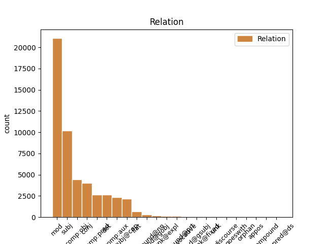
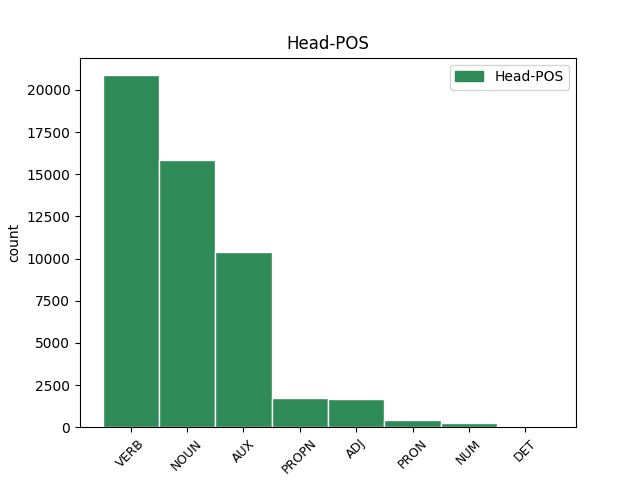
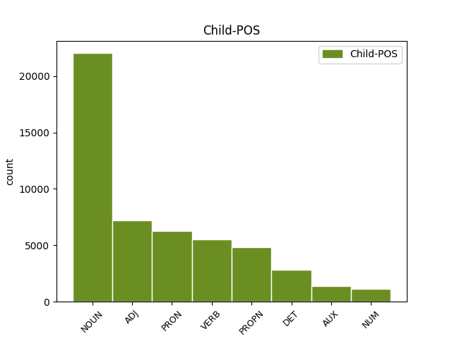

Distribution of features within this leaf



Agreement Rules sorted by frequency.
- When the dependent token is the modifer(mod) of the head token, and the head token is NOUN and the dependent token is ADJ.
1 Tämä _ _ _ _ 0 _ _ _
2 on _ _ _ _ 0 _ _ _
3 epävirallinen _ _ _ _ 0 _ _ _
4 keskustelu _ _ _ _ 0 _ _ _
5 , _ _ _ _ 0 _ _ _
6 ja _ _ _ _ 0 _ _ _
7 kaikenlaiset kaikenlainen ADJ A,Qnt,Pl,Nom Case=Nom|Number=Plur|PronType=Ind 8 mod _ _
8 seikat seikka NOUN N,Pl,Nom Case=Nom|Number=Plur 0 _ _ _
9 ovat _ _ _ _ 0 _ _ _
10 tutkimuksissa _ _ _ _ 0 _ _ _
11 tärkeitä _ _ _ _ 0 _ _ _
12 , _ _ _ _ 0 _ _ _
13 pienetkin _ _ _ _ 0 _ _ _
14 . _ _ _ _ 0 _ _ _
1 Ja _ _ _ _ 0 _ _ _
2 lupasitte _ _ _ _ 0 _ _ _
3 maksaa _ _ _ _ 0 _ _ _
4 tänään _ _ _ _ 0 _ _ _
5 , _ _ _ _ 0 _ _ _
6 mulla _ _ _ _ 0 _ _ _
7 olisi olla VERB V,Act,Cond,Sg3 Mood=Cnd|Number=Sing|Person=3|VerbForm=Fin|Voice=Act 0 _ _ _
8 sille _ _ _ _ 0 _ _ _
9 rahalle raha NOUN N,Sg,All Case=All|Number=Sing 7 mod _ _
10 kovasti _ _ _ _ 0 _ _ _
11 käyttöä _ _ _ _ 0 _ _ _
12 . _ _ _ _ 0 _ _ _
1 Tuliko tulla VERB V,Act,Ind,Past,Sg3,Ko Clitic=Ko|Mood=Ind|Number=Sing|Person=3|Tense=Past|VerbForm=Fin|Voice=Act 0 _ _ _
2 mitään _ _ _ _ 0 _ _ _
3 kalaa kala NOUN N,Sg,Par Case=Par|Number=Sing 1 subj _ _
4 ? _ _ _ _ 0 _ _ _
1 tuleekohan _ _ _ _ 0 _ _ _
2 nyt _ _ _ _ 0 _ _ _
3 kuus _ _ _ _ 0 _ _ _
4 taikka _ _ _ _ 0 _ _ _
5 seitsemän _ _ _ _ 0 _ _ _
6 vuotta _ _ _ _ 0 _ _ _
7 syyskuussa _ _ _ _ 0 _ _ _
8 vai _ _ _ _ 0 _ _ _
9 elokuussa _ _ _ _ 0 _ _ _
10 kun _ _ _ _ 0 _ _ _
11 en _ _ _ _ 0 _ _ _
12 o _ _ _ _ 0 _ _ _
13 en _ _ _ _ 0 _ _ _
14 oo _ _ _ _ 0 _ _ _
15 tupakan tupakka NOUN N,Sg,Gen Case=Gen|Number=Sing 16 mod _ _
16 tupakkaa tupakka NOUN N,Sg,Par Case=Par|Number=Sing 0 _ _ _
17 polttannu _ _ _ _ 0 _ _ _
18 . _ _ _ _ 0 _ _ _
1 Mutta _ _ _ _ 0 _ _ _
2 , _ _ _ _ 0 _ _ _
3 hei _ _ _ _ 0 _ _ _
4 , _ _ _ _ 0 _ _ _
5 mä minä PRON Pron,Pers,Sg1,Nom Case=Nom|Number=Sing|Person=1|PronType=Prs|Style=Coll 6 subj _ _
6 aattelin ajatella VERB V,Act,Ind,Past,Sg1 Mood=Ind|Number=Sing|Person=1|Style=Coll|Tense=Past|VerbForm=Fin|Voice=Act 0 _ _ _
7 koko _ _ _ _ 0 _ _ _
8 ajan _ _ _ _ 0 _ _ _
9 sua _ _ _ _ 0 _ _ _
10 . _ _ _ _ 0 _ _ _
1 Ja _ _ _ _ 0 _ _ _
2 lupasitte _ _ _ _ 0 _ _ _
3 maksaa _ _ _ _ 0 _ _ _
4 tänään _ _ _ _ 0 _ _ _
5 , _ _ _ _ 0 _ _ _
6 mulla _ _ _ _ 0 _ _ _
7 olisi _ _ _ _ 0 _ _ _
8 sille se DET Pron,Dem,Sg,All Case=All|Number=Sing|PronType=Dem 9 det _ _
9 rahalle raha NOUN N,Sg,All Case=All|Number=Sing 0 _ _ _
10 kovasti _ _ _ _ 0 _ _ _
11 käyttöä _ _ _ _ 0 _ _ _
12 . _ _ _ _ 0 _ _ _
1 tuleekohan _ _ _ _ 0 _ _ _
2 nyt _ _ _ _ 0 _ _ _
3 kuus _ _ _ _ 0 _ _ _
4 taikka _ _ _ _ 0 _ _ _
5 seitsemän _ _ _ _ 0 _ _ _
6 vuotta _ _ _ _ 0 _ _ _
7 syyskuussa _ _ _ _ 0 _ _ _
8 vai _ _ _ _ 0 _ _ _
9 elokuussa _ _ _ _ 0 _ _ _
10 kun _ _ _ _ 0 _ _ _
11 en _ _ _ _ 0 _ _ _
12 o _ _ _ _ 0 _ _ _
13 en _ _ _ _ 0 _ _ _
14 oo _ _ _ _ 0 _ _ _
15 tupakan _ _ _ _ 0 _ _ _
16 tupakkaa tupakka NOUN N,Sg,Par Case=Par|Number=Sing 17 comp:obj _ _
17 polttannu polttaa VERB V,Act,PcpNut,Sg,Nom Case=Nom|Number=Sing|PartForm=Past|Style=Coll|VerbForm=Part|Voice=Act 0 _ _ _
18 . _ _ _ _ 0 _ _ _
1 niin _ _ _ _ 0 _ _ _
2 luvattiin _ _ _ _ 0 _ _ _
3 , _ _ _ _ 0 _ _ _
4 mutta _ _ _ _ 0 _ _ _
5 älä ei AUX V,Neg,Act,Imprt,Sg2 Mood=Imp|Number=Sing|Person=2|Polarity=Neg|VerbForm=Fin|Voice=Act 0 _ _ _
6 Anna _ _ _ _ 0 _ _ _
7 kiltti _ _ _ _ 0 _ _ _
8 hermostu hermostua VERB V,Act,Imprt,Sg2 Mood=Imp|Number=Sing|Person=2|VerbForm=Fin|Voice=Act 5 comp:aux _ _
9 . _ _ _ _ 0 _ _ _
1 Hyvä _ _ _ _ 0 _ _ _
2 on _ _ _ _ 0 _ _ _
3 , _ _ _ _ 0 _ _ _
4 hyvä hyvä ADJ A,Sg,Nom Case=Nom|Number=Sing 5 comp:pred _ _
5 on olla AUX V,Act,Ind,Pres,Sg3 Mood=Ind|Number=Sing|Person=3|Tense=Pres|VerbForm=Fin|Voice=Act 0 _ _ _
6 . _ _ _ _ 0 _ _ _
1 elikkä _ _ _ _ 0 _ _ _
2 tuota _ _ _ _ 0 _ _ _
3 Täs _ _ _ _ 0 _ _ _
4 on _ _ _ _ 0 _ _ _
5 nyt _ _ _ _ 0 _ _ _
6 mä _ _ _ _ 0 _ _ _
7 kattelin _ _ _ _ 0 _ _ _
8 ihan _ _ _ _ 0 _ _ _
9 , _ _ _ _ 0 _ _ _
10 ihan _ _ _ _ 0 _ _ _
11 noiden _ _ _ _ 0 _ _ _
12 teiän _ _ _ _ 0 _ _ _
13 kooditusten _ _ _ _ 0 _ _ _
14 : _ _ _ _ 0 _ _ _
15 kooditusten _ _ _ _ 0 _ _ _
16 perusteella _ _ _ _ 0 _ _ _
17 ja _ _ _ _ 0 _ _ _
18 , _ _ _ _ 0 _ _ _
19 ja _ _ _ _ 0 _ _ _
20 tota _ _ _ _ 0 _ _ _
21 Totesin _ _ _ _ 0 _ _ _
22 sitte _ _ _ _ 0 _ _ _
23 et _ _ _ _ 0 _ _ _
24 ku _ _ _ _ 0 _ _ _
25 siin _ _ _ _ 0 _ _ _
26 nyt _ _ _ _ 0 _ _ _
27 mitään _ _ _ _ 0 _ _ _
28 ihmeellistä _ _ _ _ 0 _ _ _
29 hommaa homma NOUN N,Sg,Par Case=Par|Number=Sing 32 subj _ _
30 hommaa _ _ _ _ 0 _ _ _
31 tosiaan _ _ _ _ 0 _ _ _
32 ei ei AUX V,Neg,Act,Sg3 Number=Sing|Person=3|Polarity=Neg|VerbForm=Fin|Voice=Act 0 _ _ _
33 olis _ _ _ _ 0 _ _ _
34 niin _ _ _ _ 0 _ _ _
35 , _ _ _ _ 0 _ _ _
36 niin _ _ _ _ 0 _ _ _
37 tota _ _ _ _ 0 _ _ _
38 - _ _ _ _ 0 _ _ _
39 kyllä _ _ _ _ 0 _ _ _
40 ne _ _ _ _ 0 _ _ _
41 samat _ _ _ _ 0 _ _ _
42 ehdot _ _ _ _ 0 _ _ _
43 ihan _ _ _ _ 0 _ _ _
44 ihan _ _ _ _ 0 _ _ _
45 sitte _ _ _ _ 0 _ _ _
46 ku _ _ _ _ 0 _ _ _
47 Rakestaki _ _ _ _ 0 _ _ _
48 että _ _ _ _ 0 _ _ _
49 tota _ _ _ _ 0 _ _ _
50 , _ _ _ _ 0 _ _ _
51 että _ _ _ _ 0 _ _ _
52 enempäähän _ _ _ _ 0 _ _ _
53 me _ _ _ _ 0 _ _ _
54 ei _ _ _ _ 0 _ _ _
55 ei _ _ _ _ 0 _ _ _
56 pystytä _ _ _ _ 0 _ _ _
57 siinä _ _ _ _ 0 _ _ _
58 tarjoomaan _ _ _ _ 0 _ _ _
59 koska _ _ _ _ 0 _ _ _
60 . _ _ _ _ 0 _ _ _
1 Tämä _ _ _ _ 0 _ _ _
2 on _ _ _ _ 0 _ _ _
3 epävirallinen _ _ _ _ 0 _ _ _
4 keskustelu _ _ _ _ 0 _ _ _
5 , _ _ _ _ 0 _ _ _
6 ja _ _ _ _ 0 _ _ _
7 kaikenlaiset _ _ _ _ 0 _ _ _
8 seikat seikka NOUN N,Pl,Nom Case=Nom|Number=Plur 9 subj@cop _ _
9 ovat olla AUX V,Act,Ind,Pres,Pl3 Mood=Ind|Number=Plur|Person=3|Tense=Pres|VerbForm=Fin|Voice=Act 0 _ _ _
10 tutkimuksissa _ _ _ _ 0 _ _ _
11 tärkeitä _ _ _ _ 0 _ _ _
12 , _ _ _ _ 0 _ _ _
13 pienetkin _ _ _ _ 0 _ _ _
14 . _ _ _ _ 0 _ _ _
1 Olen _ _ _ _ 0 _ _ _
2 kuullut _ _ _ _ 0 _ _ _
3 työssä _ _ _ _ 0 _ _ _
4 käyvien käydä VERB V,Act,PcpVa,Pl,Gen Case=Gen|Number=Plur|PartForm=Pres|VerbForm=Part|Voice=Act 5 mod _ _
5 äitien äiti NOUN N,Pl,Gen Case=Gen|Number=Plur 0 _ _ _
6 joskus _ _ _ _ 0 _ _ _
7 lausahtavan _ _ _ _ 0 _ _ _
8 , _ _ _ _ 0 _ _ _
9 että _ _ _ _ 0 _ _ _
10 miksi _ _ _ _ 0 _ _ _
11 pitäisi _ _ _ _ 0 _ _ _
12 jäädä _ _ _ _ 0 _ _ _
13 kotiin _ _ _ _ 0 _ _ _
14 " _ _ _ _ 0 _ _ _
15 makailemaan _ _ _ _ 0 _ _ _
16 " _ _ _ _ 0 _ _ _
17 . _ _ _ _ 0 _ _ _
1 tuleekohan _ _ _ _ 0 _ _ _
2 nyt _ _ _ _ 0 _ _ _
3 kuus _ _ _ _ 0 _ _ _
4 taikka _ _ _ _ 0 _ _ _
5 seitsemän _ _ _ _ 0 _ _ _
6 vuotta _ _ _ _ 0 _ _ _
7 syyskuussa syyskuu NOUN N,Sg,Ine Case=Ine|Number=Sing 0 _ _ _
8 vai _ _ _ _ 0 _ _ _
9 elokuussa elokuu NOUN N,Sg,Ine Case=Ine|Number=Sing 7 conj _ _
10 kun _ _ _ _ 0 _ _ _
11 en _ _ _ _ 0 _ _ _
12 o _ _ _ _ 0 _ _ _
13 en _ _ _ _ 0 _ _ _
14 oo _ _ _ _ 0 _ _ _
15 tupakan _ _ _ _ 0 _ _ _
16 tupakkaa _ _ _ _ 0 _ _ _
17 polttannu _ _ _ _ 0 _ _ _
18 . _ _ _ _ 0 _ _ _
1 Mull _ _ _ _ 0 _ _ _
2 on _ _ _ _ 0 _ _ _
3 sen _ _ _ _ 0 _ _ _
4 Sundkvistin sundkvist PROPN N,Prop,Sg,Gen Case=Gen|Number=Sing 6 mod _ _
5 , _ _ _ _ 0 _ _ _
6 numero numero NOUN N,Sg,Nom Case=Nom|Number=Sing 0 _ _ _
7 kyllä _ _ _ _ 0 _ _ _
8 mut _ _ _ _ 0 _ _ _
9 mä _ _ _ _ 0 _ _ _
10 aatteli _ _ _ _ 0 _ _ _
11 et _ _ _ _ 0 _ _ _
12 mä _ _ _ _ 0 _ _ _
13 nyt _ _ _ _ 0 _ _ _
14 tiedottelen _ _ _ _ 0 _ _ _
15 sulle _ _ _ _ 0 _ _ _
16 ett _ _ _ _ 0 _ _ _
17 ei _ _ _ _ 0 _ _ _
18 ainakaan _ _ _ _ 0 _ _ _
19 tartte _ _ _ _ 0 _ _ _
20 odotella _ _ _ _ 0 _ _ _
21 mua _ _ _ _ 0 _ _ _
22 sinne _ _ _ _ 0 _ _ _
23 . _ _ _ _ 0 _ _ _
1 - _ _ _ _ 0 _ _ _
2 Ei _ _ _ _ 0 _ _ _
3 ei _ _ _ _ 0 _ _ _
4 , _ _ _ _ 0 _ _ _
5 tää _ _ _ _ 0 _ _ _
6 ei _ _ _ _ 0 _ _ _
7 paina _ _ _ _ 0 _ _ _
8 yhtään _ _ _ _ 0 _ _ _
9 mitään _ _ _ _ 0 _ _ _
10 , _ _ _ _ 0 _ _ _
11 Myski myski PROPN N,Prop,Sg,Nom Case=Nom|Number=Sing 12 subj _ _
12 selitti selittää VERB V,Act,Ind,Past,Sg3 Mood=Ind|Number=Sing|Person=3|Tense=Past|VerbForm=Fin|Voice=Act 0 _ _ _
13 . _ _ _ _ 0 _ _ _
1 Katohan katsoa VERB V,Act,Imprt,Sg2,Han Clitic=Han|Mood=Imp|Number=Sing|Person=2|Style=Coll|VerbForm=Fin|Voice=Act 0 _ _ _
2 katohan katsoa VERB V,Act,Imprt,Sg2,Han Clitic=Han|Mood=Imp|Number=Sing|Person=2|Style=Coll|VerbForm=Fin|Voice=Act 1 conj _ _
3 ! _ _ _ _ 0 _ _ _
1 - _ _ _ _ 0 _ _ _
2 Ei _ _ _ _ 0 _ _ _
3 ei _ _ _ _ 0 _ _ _
4 , _ _ _ _ 0 _ _ _
5 tää tämä PRON Pron,Dem,Sg,Nom Case=Nom|Number=Sing|PronType=Dem|Style=Coll 6 subj _ _
6 ei ei AUX V,Neg,Act,Sg3 Number=Sing|Person=3|Polarity=Neg|VerbForm=Fin|Voice=Act 0 _ _ _
7 paina _ _ _ _ 0 _ _ _
8 yhtään _ _ _ _ 0 _ _ _
9 mitään _ _ _ _ 0 _ _ _
10 , _ _ _ _ 0 _ _ _
11 Myski _ _ _ _ 0 _ _ _
12 selitti _ _ _ _ 0 _ _ _
13 . _ _ _ _ 0 _ _ _
1 Tämä _ _ _ _ 0 _ _ _
2 on olla AUX V,Act,Ind,Pres,Sg3 Mood=Ind|Number=Sing|Person=3|Tense=Pres|VerbForm=Fin|Voice=Act 0 _ _ _
3 epävirallinen _ _ _ _ 0 _ _ _
4 keskustelu keskustelu NOUN N,Sg,Nom Case=Nom|Number=Sing 2 comp:pred _ _
5 , _ _ _ _ 0 _ _ _
6 ja _ _ _ _ 0 _ _ _
7 kaikenlaiset _ _ _ _ 0 _ _ _
8 seikat _ _ _ _ 0 _ _ _
9 ovat _ _ _ _ 0 _ _ _
10 tutkimuksissa _ _ _ _ 0 _ _ _
11 tärkeitä _ _ _ _ 0 _ _ _
12 , _ _ _ _ 0 _ _ _
13 pienetkin _ _ _ _ 0 _ _ _
14 . _ _ _ _ 0 _ _ _
1 tuleekohan _ _ _ _ 0 _ _ _
2 nyt _ _ _ _ 0 _ _ _
3 kuus kuusi NUM Num,Card,Sg,Nom Case=Nom|Number=Sing|NumType=Card|Style=Coll 6 mod _ _
4 taikka _ _ _ _ 0 _ _ _
5 seitsemän _ _ _ _ 0 _ _ _
6 vuotta vuosi NOUN N,Sg,Par Case=Par|Number=Sing 0 _ _ _
7 syyskuussa _ _ _ _ 0 _ _ _
8 vai _ _ _ _ 0 _ _ _
9 elokuussa _ _ _ _ 0 _ _ _
10 kun _ _ _ _ 0 _ _ _
11 en _ _ _ _ 0 _ _ _
12 o _ _ _ _ 0 _ _ _
13 en _ _ _ _ 0 _ _ _
14 oo _ _ _ _ 0 _ _ _
15 tupakan _ _ _ _ 0 _ _ _
16 tupakkaa _ _ _ _ 0 _ _ _
17 polttannu _ _ _ _ 0 _ _ _
18 . _ _ _ _ 0 _ _ _
1 Ja _ _ _ _ 0 _ _ _
2 lupasitte _ _ _ _ 0 _ _ _
3 maksaa _ _ _ _ 0 _ _ _
4 tänään _ _ _ _ 0 _ _ _
5 , _ _ _ _ 0 _ _ _
6 mulla minä PRON Pron,Pers,Sg1,Ade Case=Ade|Number=Sing|Person=1|PronType=Prs|Style=Coll 7 mod _ Alt=nmod:own
7 olisi olla VERB V,Act,Cond,Sg3 Mood=Cnd|Number=Sing|Person=3|VerbForm=Fin|Voice=Act 0 _ _ _
8 sille _ _ _ _ 0 _ _ _
9 rahalle _ _ _ _ 0 _ _ _
10 kovasti _ _ _ _ 0 _ _ _
11 käyttöä _ _ _ _ 0 _ _ _
12 . _ _ _ _ 0 _ _ _
1 Tämä tämä PRON Pron,Dem,Sg,Nom Case=Nom|Number=Sing|PronType=Dem 2 subj@cop _ _
2 on olla AUX V,Act,Ind,Pres,Sg3 Mood=Ind|Number=Sing|Person=3|Tense=Pres|VerbForm=Fin|Voice=Act 0 _ _ _
3 epävirallinen _ _ _ _ 0 _ _ _
4 keskustelu _ _ _ _ 0 _ _ _
5 , _ _ _ _ 0 _ _ _
6 ja _ _ _ _ 0 _ _ _
7 kaikenlaiset _ _ _ _ 0 _ _ _
8 seikat _ _ _ _ 0 _ _ _
9 ovat _ _ _ _ 0 _ _ _
10 tutkimuksissa _ _ _ _ 0 _ _ _
11 tärkeitä _ _ _ _ 0 _ _ _
12 , _ _ _ _ 0 _ _ _
13 pienetkin _ _ _ _ 0 _ _ _
14 . _ _ _ _ 0 _ _ _
1 ruotsalaislehti _ _ _ _ 0 _ _ _
2 Svenska svenska PROPN N,Prop,Sg,Nom Case=Nom|Number=Sing 0 _ _ _
3 Dagbladet dagbladet PROPN N,Prop,Sg,Nom Case=Nom|Number=Sing 2 flat _ _
4 kirjoittaa _ _ _ _ 0 _ _ _
5 etusivullaan _ _ _ _ 0 _ _ _
6 : _ _ _ _ 0 _ _ _
7 " _ _ _ _ 0 _ _ _
8 Miksi _ _ _ _ 0 _ _ _
9 meidän _ _ _ _ 0 _ _ _
10 täytyy _ _ _ _ 0 _ _ _
11 anoa _ _ _ _ 0 _ _ _
12 EY:ltä _ _ _ _ 0 _ _ _
13 jäsenyyttä _ _ _ _ 0 _ _ _
14 , _ _ _ _ 0 _ _ _
15 EY _ _ _ _ 0 _ _ _
16 tulkoot _ _ _ _ 0 _ _ _
17 pyytämään _ _ _ _ 0 _ _ _
18 meitä _ _ _ _ 0 _ _ _
19 ! _ _ _ _ 0 _ _ _
20 " _ _ _ _ 0 _ _ _
1 Mutta _ _ _ _ 0 _ _ _
2 , _ _ _ _ 0 _ _ _
3 hei _ _ _ _ 0 _ _ _
4 , _ _ _ _ 0 _ _ _
5 mä _ _ _ _ 0 _ _ _
6 aattelin ajatella VERB V,Act,Ind,Past,Sg1 Mood=Ind|Number=Sing|Person=1|Style=Coll|Tense=Past|VerbForm=Fin|Voice=Act 0 _ _ _
7 koko _ _ _ _ 0 _ _ _
8 ajan _ _ _ _ 0 _ _ _
9 sua sinä PRON Pron,Pers,Sg2,Par Case=Par|Number=Sing|Person=2|PronType=Prs|Style=Coll 6 comp:obj _ _
10 . _ _ _ _ 0 _ _ _
1 Ja _ _ _ _ 0 _ _ _
2 kuinka _ _ _ _ 0 _ _ _
3 ollakaan _ _ _ _ 0 _ _ _
4 Hämeensillalla hämeensilta PROPN N,Prop,Sg,Ade Case=Ade|Number=Sing 9 mod _ _
5 vähän _ _ _ _ 0 _ _ _
6 ennen _ _ _ _ 0 _ _ _
7 Tillikkaa _ _ _ _ 0 _ _ _
8 , _ _ _ _ 0 _ _ _
9 huomasin huomata VERB V,Act,Ind,Past,Sg1 Mood=Ind|Number=Sing|Person=1|Tense=Past|VerbForm=Fin|Voice=Act 0 _ _ _
10 edessäni _ _ _ _ 0 _ _ _
11 kävelevällä _ _ _ _ 0 _ _ _
12 miehellä _ _ _ _ 0 _ _ _
13 matkakirjoituskoneeni _ _ _ _ 0 _ _ _
14 . _ _ _ _ 0 _ _ _
1 Tämä _ _ _ _ 0 _ _ _
2 on _ _ _ _ 0 _ _ _
3 epävirallinen _ _ _ _ 0 _ _ _
4 keskustelu _ _ _ _ 0 _ _ _
5 , _ _ _ _ 0 _ _ _
6 ja _ _ _ _ 0 _ _ _
7 kaikenlaiset _ _ _ _ 0 _ _ _
8 seikat _ _ _ _ 0 _ _ _
9 ovat _ _ _ _ 0 _ _ _
10 tutkimuksissa tutkimus NOUN N,Pl,Ine Case=Ine|Number=Plur 11 mod _ _
11 tärkeitä tärkeä ADJ A,Pl,Par Case=Par|Number=Plur 0 _ _ _
12 , _ _ _ _ 0 _ _ _
13 pienetkin _ _ _ _ 0 _ _ _
14 . _ _ _ _ 0 _ _ _
1 Iso iso ADJ A,Sg,Nom Case=Nom|Number=Sing 2 mod _ _
2 iso iso ADJ A,Sg,Nom Case=Nom|Number=Sing 0 _ _ _
3 tuska _ _ _ _ 0 _ _ _
4 . _ _ _ _ 0 _ _ _
1 Tämä _ _ _ _ 0 _ _ _
2 on _ _ _ _ 0 _ _ _
3 epävirallinen _ _ _ _ 0 _ _ _
4 keskustelu _ _ _ _ 0 _ _ _
5 , _ _ _ _ 0 _ _ _
6 ja _ _ _ _ 0 _ _ _
7 kaikenlaiset kaikenlainen ADJ A,Qnt,Pl,Nom Case=Nom|Number=Plur|PronType=Ind 0 _ _ _
8 seikat _ _ _ _ 0 _ _ _
9 ovat _ _ _ _ 0 _ _ _
10 tutkimuksissa _ _ _ _ 0 _ _ _
11 tärkeitä _ _ _ _ 0 _ _ _
12 , _ _ _ _ 0 _ _ _
13 pienetkin pieni ADJ A,Pl,Nom,Kin Case=Nom|Clitic=Kin|Number=Plur 7 conj _ _
14 . _ _ _ _ 0 _ _ _
1 Se _ _ _ _ 0 _ _ _
2 saa saada VERB V,Act,Ind,Pres,Sg3 Mood=Ind|Number=Sing|Person=3|Tense=Pres|VerbForm=Fin|Voice=Act 0 _ _ _
3 kyllä _ _ _ _ 0 _ _ _
4 helpolla helppo ADJ A,Sg,Ade Case=Ade|Number=Sing 2 mod _ _
5 leipänsä _ _ _ _ 0 _ _ _
6 se _ _ _ _ 0 _ _ _
7 jätkä _ _ _ _ 0 _ _ _
8 loppujen _ _ _ _ 0 _ _ _
9 lopuksi _ _ _ _ 0 _ _ _
10 jumalauta _ _ _ _ 0 _ _ _
11 . _ _ _ _ 0 _ _ _
1 Kukaan _ _ _ _ 0 _ _ _
2 ei ei AUX V,Neg,Act,Sg3 Number=Sing|Person=3|Polarity=Neg|VerbForm=Fin|Voice=Act 0 _ _ _
3 ollut olla AUX V,Act,Ind,Past,Sg,ConNeg Connegative=Yes|Mood=Ind|Number=Sing|Tense=Past|VerbForm=Fin|Voice=Act 2 comp:aux _ _
4 varautunut _ _ _ _ 0 _ _ _
5 tähän _ _ _ _ 0 _ _ _
6 . _ _ _ _ 0 _ _ _
1 No _ _ _ _ 0 _ _ _
2 entäs _ _ _ _ 0 _ _ _
3 tämä _ _ _ _ 0 _ _ _
4 , _ _ _ _ 0 _ _ _
5 supisivat _ _ _ _ 0 _ _ _
6 Erkki erkki PROPN N,Prop,Sg,Nom Case=Nom|Number=Sing 0 _ _ _
7 Pohjanheimo _ _ _ _ 0 _ _ _
8 ja _ _ _ _ 0 _ _ _
9 kapellimestari _ _ _ _ 0 _ _ _
10 Olli olli PROPN N,Prop,Sg,Nom Case=Nom|Number=Sing 6 conj _ Alt=name
11 Ahvenlahti _ _ _ _ 0 _ _ _
12 . _ _ _ _ 0 _ _ _
1 Voi _ _ _ _ 0 _ _ _
2 voi _ _ _ _ 0 _ _ _
3 kun _ _ _ _ 0 _ _ _
4 Abdi abdi PROPN N,Prop,Sg,Nom Case=Nom|Number=Sing 5 subj _ _
5 on olla AUX V,Act,Ind,Pres,Sg3 Mood=Ind|Number=Sing|Person=3|Tense=Pres|VerbForm=Fin|Voice=Act 0 _ _ _
6 muuttanut _ _ _ _ 0 _ _ _
7 pois _ _ _ _ 0 _ _ _
8 . _ _ _ _ 0 _ _ _
1 - _ _ _ _ 0 _ _ _
2 Ei ei VERB V,Neg,Act,Sg3 Number=Sing|Person=3|Polarity=Neg|VerbForm=Fin|Voice=Act 12 comp:obj _ _
3 ei _ _ _ _ 0 _ _ _
4 , _ _ _ _ 0 _ _ _
5 tää _ _ _ _ 0 _ _ _
6 ei _ _ _ _ 0 _ _ _
7 paina _ _ _ _ 0 _ _ _
8 yhtään _ _ _ _ 0 _ _ _
9 mitään _ _ _ _ 0 _ _ _
10 , _ _ _ _ 0 _ _ _
11 Myski _ _ _ _ 0 _ _ _
12 selitti selittää VERB V,Act,Ind,Past,Sg3 Mood=Ind|Number=Sing|Person=3|Tense=Past|VerbForm=Fin|Voice=Act 0 _ _ _
13 . _ _ _ _ 0 _ _ _
1 ruotsalaislehti ruotsalaislehti NOUN N,Sg,Nom Case=Nom|Number=Sing 2 compound@nn _ Alt=compound:nn
2 Svenska svenska PROPN N,Prop,Sg,Nom Case=Nom|Number=Sing 0 _ _ _
3 Dagbladet _ _ _ _ 0 _ _ _
4 kirjoittaa _ _ _ _ 0 _ _ _
5 etusivullaan _ _ _ _ 0 _ _ _
6 : _ _ _ _ 0 _ _ _
7 " _ _ _ _ 0 _ _ _
8 Miksi _ _ _ _ 0 _ _ _
9 meidän _ _ _ _ 0 _ _ _
10 täytyy _ _ _ _ 0 _ _ _
11 anoa _ _ _ _ 0 _ _ _
12 EY:ltä _ _ _ _ 0 _ _ _
13 jäsenyyttä _ _ _ _ 0 _ _ _
14 , _ _ _ _ 0 _ _ _
15 EY _ _ _ _ 0 _ _ _
16 tulkoot _ _ _ _ 0 _ _ _
17 pyytämään _ _ _ _ 0 _ _ _
18 meitä _ _ _ _ 0 _ _ _
19 ! _ _ _ _ 0 _ _ _
20 " _ _ _ _ 0 _ _ _
1 Buranan _ _ _ _ 0 _ _ _
2 olisi olla AUX V,Act,Cond,Sg3 Mood=Cnd|Number=Sing|Person=3|VerbForm=Fin|Voice=Act 0 _ _ _
3 pitänyt _ _ _ _ 0 _ _ _
4 vaikuttaa _ _ _ _ 0 _ _ _
5 jo _ _ _ _ 0 _ _ _
6 parikymmentä _ _ _ _ 0 _ _ _
7 minuuttia _ _ _ _ 0 _ _ _
8 sitten _ _ _ _ 0 _ _ _
9 , _ _ _ _ 0 _ _ _
10 mutta _ _ _ _ 0 _ _ _
11 hikipisaroita _ _ _ _ 0 _ _ _
12 ei ei AUX V,Neg,Act,Sg3 Number=Sing|Person=3|Polarity=Neg|VerbForm=Fin|Voice=Act 2 conj _ _
13 otsalla _ _ _ _ 0 _ _ _
14 näkynyt _ _ _ _ 0 _ _ _
15 . _ _ _ _ 0 _ _ _
1 tuleekohan tulla VERB V,Act,Ind,Pres,Sg3,Ko,Han Clitic=Han,Ko|Mood=Ind|Number=Sing|Person=3|Tense=Pres|VerbForm=Fin|Voice=Act 0 _ _ _
2 nyt _ _ _ _ 0 _ _ _
3 kuus _ _ _ _ 0 _ _ _
4 taikka _ _ _ _ 0 _ _ _
5 seitsemän _ _ _ _ 0 _ _ _
6 vuotta _ _ _ _ 0 _ _ _
7 syyskuussa _ _ _ _ 0 _ _ _
8 vai _ _ _ _ 0 _ _ _
9 elokuussa _ _ _ _ 0 _ _ _
10 kun _ _ _ _ 0 _ _ _
11 en _ _ _ _ 0 _ _ _
12 o _ _ _ _ 0 _ _ _
13 en ei VERB V,Neg,Act,Sg1 Number=Sing|Person=1|Polarity=Neg|VerbForm=Fin|Voice=Act 1 mod _ _
14 oo _ _ _ _ 0 _ _ _
15 tupakan _ _ _ _ 0 _ _ _
16 tupakkaa _ _ _ _ 0 _ _ _
17 polttannu _ _ _ _ 0 _ _ _
18 . _ _ _ _ 0 _ _ _
1 - _ _ _ _ 0 _ _ _
2 Ei _ _ _ _ 0 _ _ _
3 ei ei VERB V,Neg,Act,Sg3 Number=Sing|Person=3|Polarity=Neg|VerbForm=Fin|Voice=Act 0 _ _ _
4 , _ _ _ _ 0 _ _ _
5 tää _ _ _ _ 0 _ _ _
6 ei ei AUX V,Neg,Act,Sg3 Number=Sing|Person=3|Polarity=Neg|VerbForm=Fin|Voice=Act 3 conj _ _
7 paina _ _ _ _ 0 _ _ _
8 yhtään _ _ _ _ 0 _ _ _
9 mitään _ _ _ _ 0 _ _ _
10 , _ _ _ _ 0 _ _ _
11 Myski _ _ _ _ 0 _ _ _
12 selitti _ _ _ _ 0 _ _ _
13 . _ _ _ _ 0 _ _ _
1 Toi _ _ _ _ 0 _ _ _
2 Kirsti kirsti PROPN N,Prop,Sg,Nom Case=Nom|Number=Sing 4 subj@cop _ _
3 sitten _ _ _ _ 0 _ _ _
4 on olla AUX V,Act,Ind,Pres,Sg3 Mood=Ind|Number=Sing|Person=3|Tense=Pres|VerbForm=Fin|Voice=Act 0 _ _ _
5 merkillisen _ _ _ _ 0 _ _ _
6 hidas _ _ _ _ 0 _ _ _
7 . _ _ _ _ 0 _ _ _
1 Ensin _ _ _ _ 0 _ _ _
2 tuodaan _ _ _ _ 0 _ _ _
3 keskelle _ _ _ _ 0 _ _ _
4 tämmöistä tämmöinen DET A,Dem,Sg,Par Case=Par|Number=Sing|PronType=Dem 5 mod _ Alt=DET
5 kaatosadetta kaatosade NOUN N,Sg,Par Case=Par|Number=Sing 0 _ _ _
6 ja _ _ _ _ 0 _ _ _
7 sitten _ _ _ _ 0 _ _ _
8 ei _ _ _ _ 0 _ _ _
9 tiedetä _ _ _ _ 0 _ _ _
10 edes _ _ _ _ 0 _ _ _
11 oikeaa _ _ _ _ 0 _ _ _
12 hotellia _ _ _ _ 0 _ _ _
13 ! _ _ _ _ 0 _ _ _
1 Venäjänhän _ _ _ _ 0 _ _ _
2 asioita _ _ _ _ 0 _ _ _
3 on _ _ _ _ 0 _ _ _
4 jo _ _ _ _ 0 _ _ _
5 pitkään _ _ _ _ 0 _ _ _
6 hoideltu _ _ _ _ 0 _ _ _
7 pikapaikkauksin _ _ _ _ 0 _ _ _
8 , _ _ _ _ 0 _ _ _
9 presidentin _ _ _ _ 0 _ _ _
10 ukaasein ukaasi NOUN N,Pl,Ins Case=Ins|Number=Plur 0 _ _ _
11 , _ _ _ _ 0 _ _ _
12 jotka _ _ _ _ 0 _ _ _
13 saattavat saattaa AUX V,Act,Ind,Pres,Pl3 Mood=Ind|Number=Plur|Person=3|Tense=Pres|VerbForm=Fin|Voice=Act 10 mod _ _
14 olla _ _ _ _ 0 _ _ _
15 ristiriidassa _ _ _ _ 0 _ _ _
16 lain _ _ _ _ 0 _ _ _
17 kanssa _ _ _ _ 0 _ _ _
18 mutta _ _ _ _ 0 _ _ _
19 joilla _ _ _ _ 0 _ _ _
20 saadaan _ _ _ _ 0 _ _ _
21 lakia _ _ _ _ 0 _ _ _
22 nopeammin _ _ _ _ 0 _ _ _
23 muutoksia _ _ _ _ 0 _ _ _
24 aikaan _ _ _ _ 0 _ _ _
25 . _ _ _ _ 0 _ _ _
1 ruotsalaislehti _ _ _ _ 0 _ _ _
2 Svenska _ _ _ _ 0 _ _ _
3 Dagbladet _ _ _ _ 0 _ _ _
4 kirjoittaa kirjoittaa VERB V,Act,Ind,Pres,Sg3 Mood=Ind|Number=Sing|Person=3|Tense=Pres|VerbForm=Fin|Voice=Act 0 _ _ _
5 etusivullaan _ _ _ _ 0 _ _ _
6 : _ _ _ _ 0 _ _ _
7 " _ _ _ _ 0 _ _ _
8 Miksi _ _ _ _ 0 _ _ _
9 meidän _ _ _ _ 0 _ _ _
10 täytyy täytyä AUX V,Act,Ind,Pres,Sg3 Mood=Ind|Number=Sing|Person=3|Tense=Pres|VerbForm=Fin|Voice=Act 4 comp:obj _ _
11 anoa _ _ _ _ 0 _ _ _
12 EY:ltä _ _ _ _ 0 _ _ _
13 jäsenyyttä _ _ _ _ 0 _ _ _
14 , _ _ _ _ 0 _ _ _
15 EY _ _ _ _ 0 _ _ _
16 tulkoot _ _ _ _ 0 _ _ _
17 pyytämään _ _ _ _ 0 _ _ _
18 meitä _ _ _ _ 0 _ _ _
19 ! _ _ _ _ 0 _ _ _
20 " _ _ _ _ 0 _ _ _
1 sinäpä _ _ _ _ 0 _ _ _
2 oletkin olla AUX V,Act,Ind,Pres,Sg2,Kin Clitic=Kin|Mood=Ind|Number=Sing|Person=2|Tense=Pres|VerbForm=Fin|Voice=Act 0 _ _ _
3 niin _ _ _ _ 0 _ _ _
4 laiska _ _ _ _ 0 _ _ _
5 , _ _ _ _ 0 _ _ _
6 aina _ _ _ _ 0 _ _ _
7 vaan _ _ _ _ 0 _ _ _
8 siinä _ _ _ _ 0 _ _ _
9 sohvalla _ _ _ _ 0 _ _ _
10 pesit pesiä VERB V,Act,Ind,Pres,Sg2 Mood=Ind|Number=Sing|Person=2|Tense=Pres|VerbForm=Fin|Voice=Act 2 conj _ _
11 , _ _ _ _ 0 _ _ _
12 ihme _ _ _ _ 0 _ _ _
13 kun _ _ _ _ 0 _ _ _
14 et _ _ _ _ 0 _ _ _
15 selkänahastasi _ _ _ _ 0 _ _ _
16 siihen _ _ _ _ 0 _ _ _
17 kiinni _ _ _ _ 0 _ _ _
18 kasva _ _ _ _ 0 _ _ _
19 . _ _ _ _ 0 _ _ _
1 Katsoitko katsoa VERB V,Act,Ind,Past,Sg2,Ko Clitic=Ko|Mood=Ind|Number=Sing|Person=2|Tense=Past|VerbForm=Fin|Voice=Act 0 _ _ _
2 maanantaina _ _ _ _ 0 _ _ _
3 ykköseltä _ _ _ _ 0 _ _ _
4 Kotikadun kotikatu PROPN N,Prop,Sg,Gen Case=Gen|Number=Sing 1 comp:obj _ _
5 ? _ _ _ _ 0 _ _ _
1 Harvalla _ _ _ _ 0 _ _ _
2 tulisi tulla VERB V,Act,Cond,Sg3 Mood=Cnd|Number=Sing|Person=3|VerbForm=Fin|Voice=Act 0 _ _ _
3 sellainen sellainen ADJ A,Dem,Sg,Nom Case=Nom|Number=Sing|PronType=Dem 2 subj _ _
4 edes _ _ _ _ 0 _ _ _
5 mieleen _ _ _ _ 0 _ _ _
6 . _ _ _ _ 0 _ _ _
1 Vai _ _ _ _ 0 _ _ _
2 ollaan _ _ _ _ 0 _ _ _
3 sitä se PRON Pron,Dem,Sg,Par Case=Par|Number=Sing|PronType=Dem 6 mod _ _
4 nyt _ _ _ _ 0 _ _ _
5 taas _ _ _ _ 0 _ _ _
6 setää setä NOUN N,Sg,Par Case=Par|Number=Sing 0 _ _ _
7 ? _ _ _ _ 0 _ _ _
1 Kahvin kahvi NOUN N,Sg,Gen Case=Gen|Number=Sing 2 mod@gobj _ Alt=nmod:gobj
2 kaataminen kaataminen NOUN N,Sg,Nom Case=Nom|Number=Sing 0 _ _ _
3 täytyy _ _ _ _ 0 _ _ _
4 alkaa _ _ _ _ 0 _ _ _
5 viittä _ _ _ _ 0 _ _ _
6 yli _ _ _ _ 0 _ _ _
7 kaksi _ _ _ _ 0 _ _ _
8 . _ _ _ _ 0 _ _ _
1 Tää _ _ _ _ 0 _ _ _
2 on _ _ _ _ 0 _ _ _
3 jotain jokin DET Pron,Qnt,Sg,Par Case=Par|Number=Sing|PronType=Ind 5 det _ _
4 niin _ _ _ _ 0 _ _ _
5 mahtavaa mahtava ADJ A,Sg,Par Case=Par|Number=Sing 0 _ _ _
6 ! _ _ _ _ 0 _ _ _
1 Kyllä _ _ _ _ 0 _ _ _
2 minä _ _ _ _ 0 _ _ _
3 joskus _ _ _ _ 0 _ _ _
4 olen _ _ _ _ 0 _ _ _
5 kilpaakin kilpa NOUN N,Sg,Par,Kin Case=Par|Clitic=Kin|Number=Sing 6 compound@prt _ _
6 uiskennellut uiskennella VERB V,Act,PcpNut,Sg,Nom Case=Nom|Number=Sing|PartForm=Past|VerbForm=Part|Voice=Act 0 _ _ _
7 . _ _ _ _ 0 _ _ _
1 Veltto _ _ _ _ 0 _ _ _
2 , _ _ _ _ 0 _ _ _
3 miksi _ _ _ _ 0 _ _ _
4 jätit _ _ _ _ 0 _ _ _
5 Tampereen _ _ _ _ 0 _ _ _
6 , _ _ _ _ 0 _ _ _
7 otit _ _ _ _ 0 _ _ _
8 lainaa _ _ _ _ 0 _ _ _
9 ja _ _ _ _ 0 _ _ _
10 muutit _ _ _ _ 0 _ _ _
11 omakotitaloon _ _ _ _ 0 _ _ _
12 Lempäälän lempäälä PROPN N,Prop,Sg,Gen Case=Gen|Number=Sing 13 mod _ _
13 Kuljuun kulju PROPN N,Prop,Sg,Ill Case=Ill|Number=Sing 0 _ _ _
14 ? _ _ _ _ 0 _ _ _
1 Kuullos _ _ _ _ 0 _ _ _
2 pyhä _ _ _ _ 0 _ _ _
3 vala _ _ _ _ 0 _ _ _
4 , _ _ _ _ 0 _ _ _
5 kallis kallis ADJ A,Sg,Nom Case=Nom|Number=Sing 6 mod _ _
6 Suomenmaa suomenmaa PROPN N,Prop,Sg,Nom Case=Nom|Number=Sing 0 _ _ _
1 Rauta _ _ _ _ 0 _ _ _
2 on olla AUX V,Act,Ind,Pres,Sg3 Mood=Ind|Number=Sing|Person=3|Tense=Pres|VerbForm=Fin|Voice=Act 0 _ _ _
3 painavaa painaa VERB V,Act,PcpVa,Sg,Par Case=Par|Number=Sing|PartForm=Pres|VerbForm=Part|Voice=Act 2 comp:pred _ _
1 Suomessa _ _ _ _ 0 _ _ _
2 on olla AUX V,Act,Ind,Pres,Sg3 Mood=Ind|Number=Sing|Person=3|Tense=Pres|VerbForm=Fin|Voice=Act 0 _ _ _
3 näköjään _ _ _ _ 0 _ _ _
4 mahdollista _ _ _ _ 0 _ _ _
5 ihan _ _ _ _ 0 _ _ _
6 kaikki _ _ _ _ 0 _ _ _
7 , _ _ _ _ 0 _ _ _
8 mikä _ _ _ _ 0 _ _ _
9 suuressa _ _ _ _ 0 _ _ _
10 maailmassakin _ _ _ _ 0 _ _ _
11 , _ _ _ _ 0 _ _ _
12 erityisesti _ _ _ _ 0 _ _ _
13 mitä _ _ _ _ 0 _ _ _
14 tunarointiin _ _ _ _ 0 _ _ _
15 tulee tulla VERB V,Act,Ind,Pres,Sg3 Mood=Ind|Number=Sing|Person=3|Tense=Pres|VerbForm=Fin|Voice=Act 2 mod _ _
16 . _ _ _ _ 0 _ _ _
1 No _ _ _ _ 0 _ _ _
2 se se PRON Pron,Dem,Sg,Nom Case=Nom|Number=Sing|PronType=Dem 0 _ _ _
3 siitä _ _ _ _ 0 _ _ _
4 työkalusta työkalu NOUN N,Sg,Ela Case=Ela|Number=Sing 2 mod _ _
5 , _ _ _ _ 0 _ _ _
6 kyllähän _ _ _ _ 0 _ _ _
7 Aamulehdessä _ _ _ _ 0 _ _ _
8 koneita _ _ _ _ 0 _ _ _
9 riittää _ _ _ _ 0 _ _ _
10 , _ _ _ _ 0 _ _ _
11 ajattelin _ _ _ _ 0 _ _ _
12 ja _ _ _ _ 0 _ _ _
13 lähdin _ _ _ _ 0 _ _ _
14 kävelemään _ _ _ _ 0 _ _ _
15 Hämeenkatua _ _ _ _ 0 _ _ _
16 kohti _ _ _ _ 0 _ _ _
17 uutta _ _ _ _ 0 _ _ _
18 työmaata _ _ _ _ 0 _ _ _
19 . _ _ _ _ 0 _ _ _
1 Voisitko _ _ _ _ 0 _ _ _
2 kertoa _ _ _ _ 0 _ _ _
3 , _ _ _ _ 0 _ _ _
4 määrittää _ _ _ _ 0 _ _ _
5 noin _ _ _ _ 0 _ _ _
6 yleisesti _ _ _ _ 0 _ _ _
7 että _ _ _ _ 0 _ _ _
8 mikä mikä PRON Pron,Interr,Sg,Nom Case=Nom|Number=Sing|PronType=Int 18 comp:pred _ _
9 tämän _ _ _ _ 0 _ _ _
10 kehitysavun _ _ _ _ 0 _ _ _
11 , _ _ _ _ 0 _ _ _
12 tommonen _ _ _ _ 0 _ _ _
13 yleinen _ _ _ _ 0 _ _ _
14 , _ _ _ _ 0 _ _ _
15 päämäärä _ _ _ _ 0 _ _ _
16 ja _ _ _ _ 0 _ _ _
17 pyrkimys _ _ _ _ 0 _ _ _
18 on olla AUX V,Act,Ind,Pres,Sg3 Mood=Ind|Number=Sing|Person=3|Tense=Pres|VerbForm=Fin|Voice=Act 0 _ _ _
19 . _ _ _ _ 0 _ _ _
1 Mää _ _ _ _ 0 _ _ _
2 oon _ _ _ _ 0 _ _ _
3 jotain _ _ _ _ 0 _ _ _
4 koulu-uudistajaa koulu-uudistaja NOUN N,Sg,Par Case=Par|Number=Sing 5 comp:pred _ Alt=5_xcomp
5 koettanu koettaa VERB V,Act,PcpNut,Sg,Nom Case=Nom|Number=Sing|PartForm=Past|Style=Coll|VerbForm=Part|Voice=Act 0 _ _ _
6 olla _ _ _ _ 0 _ _ _
7 koko _ _ _ _ 0 _ _ _
8 elämäni _ _ _ _ 0 _ _ _
9 . _ _ _ _ 0 _ _ _
1 Hän _ _ _ _ 0 _ _ _
2 sanoi sanoa VERB V,Act,Ind,Past,Sg3 Mood=Ind|Number=Sing|Person=3|Tense=Past|VerbForm=Fin|Voice=Act 0 _ _ _
3 muutenkin _ _ _ _ 0 _ _ _
4 paskat _ _ _ _ 0 _ _ _
5 välittävänsä välittää VERB V,Act,PcpVa,Sg,Gen,Px3 Case=Gen|Number=Sing|PartForm=Pres|Person[psor]=3|VerbForm=Part|Voice=Act 2 comp:pred _ Alt=2_xcomp
6 , _ _ _ _ 0 _ _ _
7 mitä _ _ _ _ 0 _ _ _
8 joku _ _ _ _ 0 _ _ _
9 on _ _ _ _ 0 _ _ _
10 pentuna _ _ _ _ 0 _ _ _
11 touhunnut _ _ _ _ 0 _ _ _
12 . _ _ _ _ 0 _ _ _
1 Näistä _ _ _ _ 0 _ _ _
2 yksi yksi NUM Num,Card,Sg,Nom Case=Nom|Number=Sing|NumType=Card 0 _ _ _
3 , _ _ _ _ 0 _ _ _
4 siis _ _ _ _ 0 _ _ _
5 vain _ _ _ _ 0 _ _ _
6 yksi yksi NUM Num,Card,Sg,Nom Case=Nom|Number=Sing|NumType=Card 2 mod _ _
7 rupesi _ _ _ _ 0 _ _ _
8 kasvattamaan _ _ _ _ 0 _ _ _
9 itseään _ _ _ _ 0 _ _ _
10 kuin _ _ _ _ 0 _ _ _
11 kide _ _ _ _ 0 _ _ _
12 . _ _ _ _ 0 _ _ _
1 En _ _ _ _ 0 _ _ _
2 osaa _ _ _ _ 0 _ _ _
3 sanoa _ _ _ _ 0 _ _ _
4 , _ _ _ _ 0 _ _ _
5 oliko _ _ _ _ 0 _ _ _
6 torilla _ _ _ _ 0 _ _ _
7 paljonkin _ _ _ _ 0 _ _ _
8 venäläisiä _ _ _ _ 0 _ _ _
9 sotilaita _ _ _ _ 0 _ _ _
10 , _ _ _ _ 0 _ _ _
11 hullunmyllyn _ _ _ _ 0 _ _ _
12 keskuksessa _ _ _ _ 0 _ _ _
13 ollut olla VERB V,Act,PcpNut,Sg,Nom Case=Nom|Number=Sing|PartForm=Past|VerbForm=Part|Voice=Act 14 mod _ _
14 Valtonen valtonen PROPN N,Prop,Sg,Nom Case=Nom|Number=Sing 0 _ _ _
15 tunnustaa _ _ _ _ 0 _ _ _
16 . _ _ _ _ 0 _ _ _
1 Mull _ _ _ _ 0 _ _ _
2 on _ _ _ _ 0 _ _ _
3 sen se DET Pron,Dem,Sg,Gen Case=Gen|Number=Sing|PronType=Dem 4 det _ _
4 Sundkvistin sundkvist PROPN N,Prop,Sg,Gen Case=Gen|Number=Sing 0 _ _ _
5 , _ _ _ _ 0 _ _ _
6 numero _ _ _ _ 0 _ _ _
7 kyllä _ _ _ _ 0 _ _ _
8 mut _ _ _ _ 0 _ _ _
9 mä _ _ _ _ 0 _ _ _
10 aatteli _ _ _ _ 0 _ _ _
11 et _ _ _ _ 0 _ _ _
12 mä _ _ _ _ 0 _ _ _
13 nyt _ _ _ _ 0 _ _ _
14 tiedottelen _ _ _ _ 0 _ _ _
15 sulle _ _ _ _ 0 _ _ _
16 ett _ _ _ _ 0 _ _ _
17 ei _ _ _ _ 0 _ _ _
18 ainakaan _ _ _ _ 0 _ _ _
19 tartte _ _ _ _ 0 _ _ _
20 odotella _ _ _ _ 0 _ _ _
21 mua _ _ _ _ 0 _ _ _
22 sinne _ _ _ _ 0 _ _ _
23 . _ _ _ _ 0 _ _ _
1 niin _ _ _ _ 0 _ _ _
2 luvattiin _ _ _ _ 0 _ _ _
3 , _ _ _ _ 0 _ _ _
4 mutta _ _ _ _ 0 _ _ _
5 älä _ _ _ _ 0 _ _ _
6 Anna anna PROPN N,Prop,Sg,Nom Case=Nom|Number=Sing 0 _ _ _
7 kiltti kiltti NOUN N,Sg,Nom Case=Nom|Number=Sing 6 mod _ _
8 hermostu _ _ _ _ 0 _ _ _
9 . _ _ _ _ 0 _ _ _
1 Helvetti _ _ _ _ 0 _ _ _
2 kuinka _ _ _ _ 0 _ _ _
3 yksinkertaista yksinkertainen ADJ A,Sg,Par Case=Par|Number=Sing 0 _ _ _
4 sille se PRON Pron,Dem,Sg,All Case=All|Number=Sing|PronType=Dem 3 mod _ _
5 on _ _ _ _ 0 _ _ _
6 kaikki _ _ _ _ 0 _ _ _
7 . _ _ _ _ 0 _ _ _
1 Minähän _ _ _ _ 0 _ _ _
2 yritän yrittää VERB V,Act,Ind,Pres,Sg1 Mood=Ind|Number=Sing|Person=1|Tense=Pres|VerbForm=Fin|Voice=Act 0 _ _ _
3 parhaani paras ADJ A,Sup,Sg,Gen,PxSg1 Case=Gen|Degree=Sup|Number=Sing|Number[psor]=Sing|Person[psor]=1 2 comp:obj _ _
4 , _ _ _ _ 0 _ _ _
5 mutta _ _ _ _ 0 _ _ _
6 kun _ _ _ _ 0 _ _ _
7 joukossa _ _ _ _ 0 _ _ _
8 on _ _ _ _ 0 _ _ _
9 porsaita _ _ _ _ 0 _ _ _
10 , _ _ _ _ 0 _ _ _
11 jotka _ _ _ _ 0 _ _ _
12 koko _ _ _ _ 0 _ _ _
13 ajan _ _ _ _ 0 _ _ _
14 keskeyttävät _ _ _ _ 0 _ _ _
15 . _ _ _ _ 0 _ _ _
1 Virheliike _ _ _ _ 0 _ _ _
2 se se PRON Pron,Dem,Sg,Nom Case=Nom|Number=Sing|PronType=Dem 8 unk@expl _ Alt=8_expl|Missed-Rel=phrm
3 on _ _ _ _ 0 _ _ _
4 , _ _ _ _ 0 _ _ _
5 joka _ _ _ _ 0 _ _ _
6 ihmisen _ _ _ _ 0 _ _ _
7 liikkeessä _ _ _ _ 0 _ _ _
8 pitää pitää VERB V,Act,Ind,Pres,Sg3 Mood=Ind|Number=Sing|Person=3|Tense=Pres|VerbForm=Fin|Voice=Act 0 _ _ _
9 . _ _ _ _ 0 _ _ _
1 Eikös _ _ _ _ 0 _ _ _
2 se _ _ _ _ 0 _ _ _
3 ole _ _ _ _ 0 _ _ _
4 tiedottaja _ _ _ _ 0 _ _ _
5 tai _ _ _ _ 0 _ _ _
6 tällainen tällainen ADJ A,Dem,Sg,Nom Case=Nom|Number=Sing|PronType=Dem 0 _ _ _
7 , _ _ _ _ 0 _ _ _
8 joka _ _ _ _ 0 _ _ _
9 tekee tehdä VERB V,Act,Ind,Pres,Sg3 Mood=Ind|Number=Sing|Person=3|Tense=Pres|VerbForm=Fin|Voice=Act 6 mod _ _
10 kommunikaatiota _ _ _ _ 0 _ _ _
11 . _ _ _ _ 0 _ _ _
1 Onko olla AUX V,Act,Ind,Pres,Sg3,Ko Clitic=Ko|Mood=Ind|Number=Sing|Person=3|Tense=Pres|VerbForm=Fin|Voice=Act 0 _ _ _
2 se _ _ _ _ 0 _ _ _
3 se se PRON Pron,Dem,Sg,Nom Case=Nom|Number=Sing|PronType=Dem 1 unk@expl _ Alt=6_expl|Missed-Rel=phrm
4 , _ _ _ _ 0 _ _ _
5 että _ _ _ _ 0 _ _ _
6 istuu _ _ _ _ 0 _ _ _
7 autossa _ _ _ _ 0 _ _ _
8 tunnin _ _ _ _ 0 _ _ _
9 ylimääräistä _ _ _ _ 0 _ _ _
1 mä _ _ _ _ 0 _ _ _
2 sanoi _ _ _ _ 0 _ _ _
3 et _ _ _ _ 0 _ _ _
4 sitte _ _ _ _ 0 _ _ _
5 kyllä _ _ _ _ 0 _ _ _
6 rupee _ _ _ _ 0 _ _ _
7 rassaa _ _ _ _ 0 _ _ _
8 se _ _ _ _ 0 _ _ _
9 sattuu _ _ _ _ 0 _ _ _
10 nii _ _ _ _ 0 _ _ _
11 vietävästi _ _ _ _ 0 _ _ _
12 ja _ _ _ _ 0 _ _ _
13 , _ _ _ _ 0 _ _ _
14 verenpaine _ _ _ _ 0 _ _ _
15 nousi nousta VERB V,Act,Ind,Past,Sg3 Mood=Ind|Number=Sing|Person=3|Tense=Past|VerbForm=Fin|Voice=Act 0 _ _ _
16 satayheksänkymmentä satayhdeksänkymmentä NUM Num,Card,Sg,Nom Case=Nom|Number=Sing|NumType=Card|Style=Coll 15 mod _ _
17 ja _ _ _ _ 0 _ _ _
18 mitä _ _ _ _ 0 _ _ _
19 se _ _ _ _ 0 _ _ _
20 oli _ _ _ _ 0 _ _ _
21 . _ _ _ _ 0 _ _ _
1 Ginnyllä ginny PROPN N,Prop,Sg,Ade Case=Ade|Number=Sing 4 mod _ Alt=nmod:own
2 on _ _ _ _ 0 _ _ _
3 ollut _ _ _ _ 0 _ _ _
4 vaikeaa vaikea ADJ A,Sg,Par Case=Par|Number=Sing 0 _ _ _
5 , _ _ _ _ 0 _ _ _
6 koska _ _ _ _ 0 _ _ _
7 lähes _ _ _ _ 0 _ _ _
8 kaikki _ _ _ _ 0 _ _ _
9 jotka _ _ _ _ 0 _ _ _
10 koskaan _ _ _ _ 0 _ _ _
11 ovat _ _ _ _ 0 _ _ _
12 tavanneet _ _ _ _ 0 _ _ _
13 hänet _ _ _ _ 0 _ _ _
14 ovat _ _ _ _ 0 _ _ _
15 haastaneet _ _ _ _ 0 _ _ _
16 hänet _ _ _ _ 0 _ _ _
17 oikeuteen _ _ _ _ 0 _ _ _
18 . _ _ _ _ 0 _ _ _
1 Vilkaisu _ _ _ _ 0 _ _ _
2 ylös _ _ _ _ 0 _ _ _
3 saa _ _ _ _ 0 _ _ _
4 meidät _ _ _ _ 0 _ _ _
5 epäilemään _ _ _ _ 0 _ _ _
6 tehtävän tehtävä NOUN N,Sg,Gen Case=Gen|Number=Sing 7 mod@gsubj _ Alt=nmod:gsubj
7 onnistumista onnistuminen NOUN N,Sg,Par Case=Par|Number=Sing 0 _ _ _
8 : _ _ _ _ 0 _ _ _
9 kaukana _ _ _ _ 0 _ _ _
10 kaukana _ _ _ _ 0 _ _ _
11 suoraan _ _ _ _ 0 _ _ _
12 yläpuolellamme _ _ _ _ 0 _ _ _
13 näyttää _ _ _ _ 0 _ _ _
14 olevan _ _ _ _ 0 _ _ _
15 . _ _ _ _ 0 _ _ _
1 Ja _ _ _ _ 0 _ _ _
2 se se PRON Pron,Dem,Sg,Nom Case=Nom|Number=Sing|PronType=Dem 0 _ _ _
3 on _ _ _ _ 0 _ _ _
4 hiton _ _ _ _ 0 _ _ _
5 reilusti _ _ _ _ 0 _ _ _
6 sanottu _ _ _ _ 0 _ _ _
7 , _ _ _ _ 0 _ _ _
8 se se PRON Pron,Dem,Sg,Nom Case=Nom|Number=Sing|PronType=Dem 2 mod _ _
9 . _ _ _ _ 0 _ _ _
1 teidän _ _ _ _ 0 _ _ _
2 on _ _ _ _ 0 _ _ _
3 luovuttava _ _ _ _ 0 _ _ _
4 kaikesta kaikki DET Pron,Qnt,Sg,Ela Case=Ela|Number=Sing|PronType=Ind 5 det _ _
5 siitä se PRON Pron,Dem,Sg,Ela Case=Ela|Number=Sing|PronType=Dem 0 _ _ _
6 , _ _ _ _ 0 _ _ _
7 mihin _ _ _ _ 0 _ _ _
8 olette _ _ _ _ 0 _ _ _
9 uskoneet _ _ _ _ 0 _ _ _
10 ja _ _ _ _ 0 _ _ _
11 mitä _ _ _ _ 0 _ _ _
12 tavoitelleet _ _ _ _ 0 _ _ _
13 . _ _ _ _ 0 _ _ _
1 Lopuksi _ _ _ _ 0 _ _ _
2 haluan _ _ _ _ 0 _ _ _
3 sanoa _ _ _ _ 0 _ _ _
4 kaikille _ _ _ _ 0 _ _ _
5 , _ _ _ _ 0 _ _ _
6 jotka _ _ _ _ 0 _ _ _
7 miettivät _ _ _ _ 0 _ _ _
8 lähtisikö _ _ _ _ 0 _ _ _
9 au au NOUN N,Sg,Nom Case=Nom|Number=Sing 10 compound@nn _ Alt=compound:nn
10 pairiksi pair NOUN N,Sg,Tra Case=Tra|Number=Sing 0 _ _ _
11 vai _ _ _ _ 0 _ _ _
12 ei _ _ _ _ 0 _ _ _
13 , _ _ _ _ 0 _ _ _
14 niin _ _ _ _ 0 _ _ _
15 menoksi _ _ _ _ 0 _ _ _
16 vaan _ _ _ _ 0 _ _ _
17 !!! _ _ _ _ 0 _ _ _
1 Eikö ei AUX V,Neg,Act,Sg3,Ko Clitic=Ko|Number=Sing|Person=3|Polarity=Neg|VerbForm=Fin|Voice=Act 0 _ _ _
2 vanhuuden _ _ _ _ 0 _ _ _
3 viisaudessa _ _ _ _ 0 _ _ _
4 olekin _ _ _ _ 0 _ _ _
5 jotain _ _ _ _ 0 _ _ _
6 suurta suuri ADJ A,Sg,Par Case=Par|Number=Sing 1 subj _ _
7 ja _ _ _ _ 0 _ _ _
8 hienoa _ _ _ _ 0 _ _ _
9 ? _ _ _ _ 0 _ _ _
1 Piruako _ _ _ _ 0 _ _ _
2 se _ _ _ _ 0 _ _ _
3 kansalle _ _ _ _ 0 _ _ _
4 kuuluu kuulua VERB V,Act,Ind,Pres,Sg3 Mood=Ind|Number=Sing|Person=3|Tense=Pres|VerbForm=Fin|Voice=Act 0 _ _ _
5 mitä _ _ _ _ 0 _ _ _
6 herrat _ _ _ _ 0 _ _ _
7 päättää päättää VERB V,Act,Ind,Pres,Sg3 Mood=Ind|Number=Sing|Person=3|Tense=Pres|VerbForm=Fin|Voice=Act 4 subj _ _
8 . _ _ _ _ 0 _ _ _
1 Olen olla AUX V,Act,Ind,Pres,Sg1 Mood=Ind|Number=Sing|Person=1|Tense=Pres|VerbForm=Fin|Voice=Act 0 _ _ _
2 Calle calle PROPN N,Prop,Sg,Nom Case=Nom|Number=Sing 1 comp:pred _ Alt=name
3 Öhman _ _ _ _ 0 _ _ _
4 . _ _ _ _ 0 _ _ _
1 tottahan _ _ _ _ 0 _ _ _
2 tuon _ _ _ _ 0 _ _ _
3 tiennöön _ _ _ _ 0 _ _ _
4 kuka _ _ _ _ 0 _ _ _
5 se se PRON Pron,Dem,Sg,Nom Case=Nom|Number=Sing|PronType=Dem 0 _ _ _
6 mikä _ _ _ _ 0 _ _ _
7 se se PRON Pron,Dem,Sg,Nom Case=Nom|Number=Sing|PronType=Dem 5 conj _ _
8 minkälainen _ _ _ _ 0 _ _ _
9 on _ _ _ _ 0 _ _ _
1 Oikeastaan _ _ _ _ 0 _ _ _
2 ainoa _ _ _ _ 0 _ _ _
3 vähänkin _ _ _ _ 0 _ _ _
4 hankalampi _ _ _ _ 0 _ _ _
5 seuraus _ _ _ _ 0 _ _ _
6 on _ _ _ _ 0 _ _ _
7 seuraus _ _ _ _ 0 _ _ _
8 hoidosta _ _ _ _ 0 _ _ _
9 , _ _ _ _ 0 _ _ _
10 eikä ei AUX V,Neg,Act,Sg3,Ka Clitic=Ka|Number=Sing|Person=3|Polarity=Neg|VerbForm=Fin|Voice=Act 0 _ _ _
11 taudista tauti NOUN N,Sg,Ela Case=Ela|Number=Sing 10 comp:aux _ _
12 . _ _ _ _ 0 _ _ _
1 tuleekohan _ _ _ _ 0 _ _ _
2 nyt _ _ _ _ 0 _ _ _
3 kuus kuusi NUM Num,Card,Sg,Nom Case=Nom|Number=Sing|NumType=Card|Style=Coll 0 _ _ _
4 taikka _ _ _ _ 0 _ _ _
5 seitsemän seitsemän NUM Num,Card,Sg,Nom Case=Nom|Number=Sing|NumType=Card 3 conj _ _
6 vuotta _ _ _ _ 0 _ _ _
7 syyskuussa _ _ _ _ 0 _ _ _
8 vai _ _ _ _ 0 _ _ _
9 elokuussa _ _ _ _ 0 _ _ _
10 kun _ _ _ _ 0 _ _ _
11 en _ _ _ _ 0 _ _ _
12 o _ _ _ _ 0 _ _ _
13 en _ _ _ _ 0 _ _ _
14 oo _ _ _ _ 0 _ _ _
15 tupakan _ _ _ _ 0 _ _ _
16 tupakkaa _ _ _ _ 0 _ _ _
17 polttannu _ _ _ _ 0 _ _ _
18 . _ _ _ _ 0 _ _ _
1 ihminen _ _ _ _ 0 _ _ _
2 on _ _ _ _ 0 _ _ _
3 ahne ahne ADJ A,Sg,Nom Case=Nom|Number=Sing 0 _ _ _
4 ja _ _ _ _ 0 _ _ _
5 kanssaihmisistä _ _ _ _ 0 _ _ _
6 piittaamaton piitata VERB V,PcpNeg,Sg,Nom Case=Nom|Number=Sing|PartForm=Neg|VerbForm=Part 3 conj _ _
7 . _ _ _ _ 0 _ _ _
1 Sanoppas _ _ _ _ 0 _ _ _
2 minkälainen minkälainen ADJ A,Interr,Sg,Nom Case=Nom|Number=Sing|PronType=Int 3 subj@cop _ _
3 on olla AUX V,Act,Ind,Pres,Sg3 Mood=Ind|Number=Sing|Person=3|Tense=Pres|VerbForm=Fin|Voice=Act 0 _ _ _
4 kuiva _ _ _ _ 0 _ _ _
5 . _ _ _ _ 0 _ _ _
1 Virheliike _ _ _ _ 0 _ _ _
2 se _ _ _ _ 0 _ _ _
3 on olla AUX V,Act,Ind,Pres,Sg3 Mood=Ind|Number=Sing|Person=3|Tense=Pres|VerbForm=Fin|Voice=Act 0 _ _ _
4 , _ _ _ _ 0 _ _ _
5 joka _ _ _ _ 0 _ _ _
6 ihmisen _ _ _ _ 0 _ _ _
7 liikkeessä _ _ _ _ 0 _ _ _
8 pitää pitää VERB V,Act,Ind,Pres,Sg3 Mood=Ind|Number=Sing|Person=3|Tense=Pres|VerbForm=Fin|Voice=Act 3 subj@cop _ _
9 . _ _ _ _ 0 _ _ _
1 " _ _ _ _ 0 _ _ _
2 Et _ _ _ _ 0 _ _ _
3 viitsisi _ _ _ _ 0 _ _ _
4 leipasta _ _ _ _ 0 _ _ _
5 edes _ _ _ _ 0 _ _ _
6 muutamaa _ _ _ _ 0 _ _ _
7 piparkakkuveturia _ _ _ _ 0 _ _ _
8 ja _ _ _ _ 0 _ _ _
9 yhtä yksi NUM Num,Card,Sg,Par Case=Par|Number=Sing|NumType=Card 10 mod _ _
10 suurta suuri ADJ A,Sg,Par Case=Par|Number=Sing 0 _ _ _
11 piparkakkutaloa _ _ _ _ 0 _ _ _
12 " _ _ _ _ 0 _ _ _
13 . _ _ _ _ 0 _ _ _
1 kaikki _ _ _ _ 0 _ _ _
2 halusivat haluta VERB V,Act,Ind,Past,Pl3 Mood=Ind|Number=Plur|Person=3|Tense=Past|VerbForm=Fin|Voice=Act 0 _ _ _
3 olla _ _ _ _ 0 _ _ _
4 nuoria nuori ADJ A,Pl,Par Case=Par|Number=Plur 2 comp:pred _ Alt=2_xcomp
5 , _ _ _ _ 0 _ _ _
6 nuoria _ _ _ _ 0 _ _ _
7 ehkä _ _ _ _ 0 _ _ _
8 lukuun _ _ _ _ 0 _ _ _
9 ottamatta _ _ _ _ 0 _ _ _
10 . _ _ _ _ 0 _ _ _
1 Lopuksi _ _ _ _ 0 _ _ _
2 haluan _ _ _ _ 0 _ _ _
3 sanoa _ _ _ _ 0 _ _ _
4 kaikille kaikki PRON Pron,Qnt,Pl,All Case=All|Number=Plur|PronType=Ind 0 _ _ _
5 , _ _ _ _ 0 _ _ _
6 jotka _ _ _ _ 0 _ _ _
7 miettivät miettiä VERB V,Act,Ind,Pres,Pl3 Mood=Ind|Number=Plur|Person=3|Tense=Pres|VerbForm=Fin|Voice=Act 4 mod _ _
8 lähtisikö _ _ _ _ 0 _ _ _
9 au _ _ _ _ 0 _ _ _
10 pairiksi _ _ _ _ 0 _ _ _
11 vai _ _ _ _ 0 _ _ _
12 ei _ _ _ _ 0 _ _ _
13 , _ _ _ _ 0 _ _ _
14 niin _ _ _ _ 0 _ _ _
15 menoksi _ _ _ _ 0 _ _ _
16 vaan _ _ _ _ 0 _ _ _
17 !!! _ _ _ _ 0 _ _ _
1 Totta tosi NOUN N,Sg,Par Case=Par|Number=Sing 0 _ _ _
2 : _ _ _ _ 0 _ _ _
3 suvaitsevainen _ _ _ _ 0 _ _ _
4 on olla AUX V,Act,Ind,Pres,Sg3 Mood=Ind|Number=Sing|Person=3|Tense=Pres|VerbForm=Fin|Voice=Act 1 conj _ Alt=5_cop
5 helppo _ _ _ _ 0 _ _ _
6 olla _ _ _ _ 0 _ _ _
7 , _ _ _ _ 0 _ _ _
8 mutta _ _ _ _ 0 _ _ _
9 ollapa _ _ _ _ 0 _ _ _
10 avarasydäminen _ _ _ _ 0 _ _ _
11 , _ _ _ _ 0 _ _ _
12 joka _ _ _ _ 0 _ _ _
13 kuitenkin _ _ _ _ 0 _ _ _
14 on _ _ _ _ 0 _ _ _
15 eräs _ _ _ _ 0 _ _ _
16 suvaitsevaisuuden _ _ _ _ 0 _ _ _
17 synonyymeistä _ _ _ _ 0 _ _ _
18 . _ _ _ _ 0 _ _ _
1 Poliitikot _ _ _ _ 0 _ _ _
2 eivät _ _ _ _ 0 _ _ _
3 petä _ _ _ _ 0 _ _ _
4 vain _ _ _ _ 0 _ _ _
5 kansaa kansa NOUN N,Sg,Par Case=Par|Number=Sing 0 _ _ _
6 , _ _ _ _ 0 _ _ _
7 vaan _ _ _ _ 0 _ _ _
8 myös _ _ _ _ 0 _ _ _
9 itseään itse PRON Pron,Refl,Sg,Par,Px3 Case=Par|Number=Sing|Person[psor]=3|Reflex=Yes 5 conj _ _
10 . _ _ _ _ 0 _ _ _
1 Talvikunnaan _ _ _ _ 0 _ _ _
2 aika _ _ _ _ 0 _ _ _
3 ei _ _ _ _ 0 _ _ _
4 ehdi _ _ _ _ 0 _ _ _
5 kuitenkaan _ _ _ _ 0 _ _ _
6 käydä _ _ _ _ 0 _ _ _
7 pitkäksi _ _ _ _ 0 _ _ _
8 , _ _ _ _ 0 _ _ _
9 kun _ _ _ _ 0 _ _ _
10 nuori _ _ _ _ 0 _ _ _
11 miespuolinen _ _ _ _ 0 _ _ _
12 pankkivirkailija _ _ _ _ 0 _ _ _
13 nousee _ _ _ _ 0 _ _ _
14 seisomaan _ _ _ _ 0 _ _ _
15 tiskin _ _ _ _ 0 _ _ _
16 takaa _ _ _ _ 0 _ _ _
17 ja _ _ _ _ 0 _ _ _
18 sanoo _ _ _ _ 0 _ _ _
19 : _ _ _ _ 0 _ _ _
20 " _ _ _ _ 0 _ _ _
21 Päivää päivä NOUN N,Sg,Par Case=Par|Number=Sing 0 _ _ _
22 , _ _ _ _ 0 _ _ _
23 oliko olla VERB V,Act,Ind,Past,Sg3,Ko Clitic=Ko|Mood=Ind|Number=Sing|Person=3|Tense=Past|VerbForm=Fin|Voice=Act 21 conj _ _
24 kenen _ _ _ _ 0 _ _ _
25 vuoro _ _ _ _ 0 _ _ _
26 seuraavaksi _ _ _ _ 0 _ _ _
27 ? _ _ _ _ 0 _ _ _
28 " _ _ _ _ 0 _ _ _
1 Kenen _ _ _ _ 0 _ _ _
2 luottamusta _ _ _ _ 0 _ _ _
3 hallituksen _ _ _ _ 0 _ _ _
4 pitikään _ _ _ _ 0 _ _ _
5 nauttia _ _ _ _ 0 _ _ _
6 , _ _ _ _ 0 _ _ _
7 SAK:n sak PROPN N,Abbr,Prop,Sg,Gen Abbr=Yes|Case=Gen|Number=Sing 0 _ _ _
8 vai _ _ _ _ 0 _ _ _
9 eduskunnan eduskunta NOUN N,Sg,Gen Case=Gen|Number=Sing 7 conj _ _
10 ? _ _ _ _ 0 _ _ _
1 On _ _ _ _ 0 _ _ _
2 ilmeistä _ _ _ _ 0 _ _ _
3 että _ _ _ _ 0 _ _ _
4 Suomessakin _ _ _ _ 0 _ _ _
5 yhteiskunta _ _ _ _ 0 _ _ _
6 tukee _ _ _ _ 0 _ _ _
7 autoilua _ _ _ _ 0 _ _ _
8 vuosittain _ _ _ _ 0 _ _ _
9 useilla usea DET Pron,Qnt,Pl,Ade Case=Ade|Number=Plur|PronType=Ind 10 det _ _
10 miljardeilla miljardi NUM Num,Card,Pl,Ade Case=Ade|Number=Plur|NumType=Card 0 _ _ _
11 . _ _ _ _ 0 _ _ _
1 Veltto veltto PROPN N,Prop,Sg,Nom Case=Nom|Number=Sing 4 vocative _ _
2 , _ _ _ _ 0 _ _ _
3 miksi _ _ _ _ 0 _ _ _
4 jätit jättää VERB V,Act,Ind,Past,Sg2 Mood=Ind|Number=Sing|Person=2|Tense=Past|VerbForm=Fin|Voice=Act 0 _ _ _
5 Tampereen _ _ _ _ 0 _ _ _
6 , _ _ _ _ 0 _ _ _
7 otit _ _ _ _ 0 _ _ _
8 lainaa _ _ _ _ 0 _ _ _
9 ja _ _ _ _ 0 _ _ _
10 muutit _ _ _ _ 0 _ _ _
11 omakotitaloon _ _ _ _ 0 _ _ _
12 Lempäälän _ _ _ _ 0 _ _ _
13 Kuljuun _ _ _ _ 0 _ _ _
14 ? _ _ _ _ 0 _ _ _
1 Mulla _ _ _ _ 0 _ _ _
2 ei ei AUX V,Neg,Act,Sg3 Number=Sing|Person=3|Polarity=Neg|VerbForm=Fin|Voice=Act 0 _ _ _
3 ole _ _ _ _ 0 _ _ _
4 mitään _ _ _ _ 0 _ _ _
5 päälle _ _ _ _ 0 _ _ _
6 pantavaa panna VERB V,Pass,PcpVa,Sg,Par Case=Par|Number=Sing|PartForm=Pres|VerbForm=Part|Voice=Pass 2 subj _ Alt=3_dobj
7 . _ _ _ _ 0 _ _ _
1 Siis _ _ _ _ 0 _ _ _
2 se _ _ _ _ 0 _ _ _
3 oli _ _ _ _ 0 _ _ _
4 ihan _ _ _ _ 0 _ _ _
5 mieletön _ _ _ _ 0 _ _ _
6 sano _ _ _ _ 0 _ _ _
7 et _ _ _ _ 0 _ _ _
8 ei _ _ _ _ 0 _ _ _
9 sulle _ _ _ _ 0 _ _ _
10 mitää _ _ _ _ 0 _ _ _
11 tehä _ _ _ _ 0 _ _ _
12 voi _ _ _ _ 0 _ _ _
13 sun _ _ _ _ 0 _ _ _
14 on _ _ _ _ 0 _ _ _
15 vietävä _ _ _ _ 0 _ _ _
16 pois _ _ _ _ 0 _ _ _
17 täältä _ _ _ _ 0 _ _ _
18 että _ _ _ _ 0 _ _ _
19 rauhotu rauhoittua VERB V,Act,Imprt,Sg2 Mood=Imp|Number=Sing|Person=2|Style=Coll|VerbForm=Fin|Voice=Act 0 _ _ _
20 rauhotu _ _ _ _ 0 _ _ _
21 hyvä _ _ _ _ 0 _ _ _
22 mies mies NOUN N,Sg,Nom Case=Nom|Number=Sing 19 vocative _ _
23 . _ _ _ _ 0 _ _ _
1 Josko _ _ _ _ 0 _ _ _
2 nyt _ _ _ _ 0 _ _ _
3 vois _ _ _ _ 0 _ _ _
4 arvella _ _ _ _ 0 _ _ _
5 että _ _ _ _ 0 _ _ _
6 se _ _ _ _ 0 _ _ _
7 kestäs _ _ _ _ 0 _ _ _
8 noin _ _ _ _ 0 _ _ _
9 tunnin tunti NOUN N,Sg,Gen Case=Gen|Number=Sing 0 _ _ _
10 tai _ _ _ _ 0 _ _ _
11 jotain _ _ _ _ 0 _ _ _
12 sen _ _ _ _ 0 _ _ _
13 tapasta tapainen ADJ A,Sg,Par Case=Par|Number=Sing|Style=Coll 9 conj _ _
14 . _ _ _ _ 0 _ _ _
1 Muistanette _ _ _ _ 0 _ _ _
2 liikkua _ _ _ _ 0 _ _ _
3 hiljaa _ _ _ _ 0 _ _ _
4 klo klo NOUN N,Abbr,Sg,Nom Abbr=Yes|Case=Nom|Number=Sing 5 mod _ _
5 22:n 22 NUM Num,Card,Sg,Gen Case=Gen|Number=Sing|NumType=Card 0 _ _ _
6 jälkeen _ _ _ _ 0 _ _ _
7 . _ _ _ _ 0 _ _ _
1 Minä _ _ _ _ 0 _ _ _
2 luulin _ _ _ _ 0 _ _ _
3 , _ _ _ _ 0 _ _ _
4 ett _ _ _ _ 0 _ _ _
5 ette _ _ _ _ 0 _ _ _
6 te te PRON Pron,Pers,Pl2,Nom Case=Nom|Number=Plur|Person=2|PronType=Prs 0 _ _ _
7 buddhalaiset buddhalainen ADJ A,Pl,Nom Case=Nom|Number=Plur 6 mod _ _
8 saa _ _ _ _ 0 _ _ _
9 tappaa _ _ _ _ 0 _ _ _
10 , _ _ _ _ 0 _ _ _
11 mutisin _ _ _ _ 0 _ _ _
12 nolona _ _ _ _ 0 _ _ _
13 . _ _ _ _ 0 _ _ _
1 Älä ei AUX V,Neg,Act,Imprt,Sg2 Mood=Imp|Number=Sing|Person=2|Polarity=Neg|VerbForm=Fin|Voice=Act 0 _ _ _
2 nyt _ _ _ _ 0 _ _ _
3 kuitenkaan _ _ _ _ 0 _ _ _
4 oikein _ _ _ _ 0 _ _ _
5 kallista kallis ADJ A,Sg,Par Case=Par|Number=Sing 1 comp:aux _ _
6 . _ _ _ _ 0 _ _ _
1 Hän _ _ _ _ 0 _ _ _
2 sanoi _ _ _ _ 0 _ _ _
3 muutenkin _ _ _ _ 0 _ _ _
4 paskat _ _ _ _ 0 _ _ _
5 välittävänsä välittää VERB V,Act,PcpVa,Sg,Gen,Px3 Case=Gen|Number=Sing|PartForm=Pres|Person[psor]=3|VerbForm=Part|Voice=Act 0 _ _ _
6 , _ _ _ _ 0 _ _ _
7 mitä _ _ _ _ 0 _ _ _
8 joku _ _ _ _ 0 _ _ _
9 on olla AUX V,Act,Ind,Pres,Sg3 Mood=Ind|Number=Sing|Person=3|Tense=Pres|VerbForm=Fin|Voice=Act 5 mod _ _
10 pentuna _ _ _ _ 0 _ _ _
11 touhunnut _ _ _ _ 0 _ _ _
12 . _ _ _ _ 0 _ _ _
1 Monet _ _ _ _ 0 _ _ _
2 sanoivat _ _ _ _ 0 _ _ _
3 , _ _ _ _ 0 _ _ _
4 että _ _ _ _ 0 _ _ _
5 taso _ _ _ _ 0 _ _ _
6 on _ _ _ _ 0 _ _ _
7 kohenemassa _ _ _ _ 0 _ _ _
8 vuosi vuosi NOUN N,Sg,Nom Case=Nom|Number=Sing 0 _ _ _
9 vuodelta vuosi NOUN N,Sg,Abl Case=Abl|Number=Sing 8 unk@fixed _ _
10 , _ _ _ _ 0 _ _ _
11 mutta _ _ _ _ 0 _ _ _
12 minä _ _ _ _ 0 _ _ _
13 se _ _ _ _ 0 _ _ _
14 vain _ _ _ _ 0 _ _ _
15 säilyn _ _ _ _ 0 _ _ _
16 ykkösenä _ _ _ _ 0 _ _ _
17 . _ _ _ _ 0 _ _ _
1 Älkää _ _ _ _ 0 _ _ _
2 luulkokaan _ _ _ _ 0 _ _ _
3 , _ _ _ _ 0 _ _ _
4 että _ _ _ _ 0 _ _ _
5 minulla _ _ _ _ 0 _ _ _
6 on _ _ _ _ 0 _ _ _
7 mitään _ _ _ _ 0 _ _ _
8 kunnollista _ _ _ _ 0 _ _ _
9 ajatusta _ _ _ _ 0 _ _ _
10 seuraavan seuraava ADJ A,Sg,Gen Case=Gen|Number=Sing 11 mod _ _
11 parin pari NUM Num,Card,Sg,Gen Case=Gen|Number=Sing|NumType=Card 0 _ _ _
12 kuukauden _ _ _ _ 0 _ _ _
13 aikana _ _ _ _ 0 _ _ _
14 . _ _ _ _ 0 _ _ _
1 Voutilaista _ _ _ _ 0 _ _ _
2 harmittaa _ _ _ _ 0 _ _ _
3 ja _ _ _ _ 0 _ _ _
4 säälittää _ _ _ _ 0 _ _ _
5 kahden _ _ _ _ 0 _ _ _
6 entisen _ _ _ _ 0 _ _ _
7 seuransa _ _ _ _ 0 _ _ _
8 , _ _ _ _ 0 _ _ _
9 Kuusysin kuusysi NOUN N,Sg,Gen Case=Gen|Number=Sing 0 _ _ _
10 ja _ _ _ _ 0 _ _ _
11 KuPS:n kups PROPN N,Abbr,Prop,Sg,Gen Abbr=Yes|Case=Gen|Number=Sing 9 conj _ _
12 nykyinen _ _ _ _ 0 _ _ _
13 alennustila _ _ _ _ 0 _ _ _
14 . _ _ _ _ 0 _ _ _
1 Voisitko _ _ _ _ 0 _ _ _
2 kertoa _ _ _ _ 0 _ _ _
3 , _ _ _ _ 0 _ _ _
4 määrittää _ _ _ _ 0 _ _ _
5 noin _ _ _ _ 0 _ _ _
6 yleisesti _ _ _ _ 0 _ _ _
7 että _ _ _ _ 0 _ _ _
8 mikä _ _ _ _ 0 _ _ _
9 tämän _ _ _ _ 0 _ _ _
10 kehitysavun _ _ _ _ 0 _ _ _
11 , _ _ _ _ 0 _ _ _
12 tommonen tuommoinen DET A,Dem,Sg,Nom Case=Nom|Number=Sing|PronType=Dem|Style=Coll 13 mod _ Alt=DET
13 yleinen yleinen ADJ A,Sg,Nom Case=Nom|Number=Sing 0 _ _ _
14 , _ _ _ _ 0 _ _ _
15 päämäärä _ _ _ _ 0 _ _ _
16 ja _ _ _ _ 0 _ _ _
17 pyrkimys _ _ _ _ 0 _ _ _
18 on _ _ _ _ 0 _ _ _
19 . _ _ _ _ 0 _ _ _
1 Näyttelijälle _ _ _ _ 0 _ _ _
2 vaikeinta _ _ _ _ 0 _ _ _
3 on _ _ _ _ 0 _ _ _
4 oman _ _ _ _ 0 _ _ _
5 itsensä itse PRON Pron,Refl,Sg,Gen,Px3 Case=Gen|Number=Sing|Person[psor]=3|Reflex=Yes 7 mod@gobj _ Alt=nmod:gobj
6 uskottava _ _ _ _ 0 _ _ _
7 esittäminen esittäminen NOUN N,Sg,Nom Case=Nom|Number=Sing 0 _ _ _
8 . _ _ _ _ 0 _ _ _
1 Hän _ _ _ _ 0 _ _ _
2 kertoi _ _ _ _ 0 _ _ _
3 eilen _ _ _ _ 0 _ _ _
4 jotain jokin DET Pron,Qnt,Sg,Par Case=Par|Number=Sing|PronType=Ind 6 det _ _
5 niin _ _ _ _ 0 _ _ _
6 uskomatonta uskoa VERB V,PcpNeg,Sg,Par Case=Par|Number=Sing|PartForm=Neg|VerbForm=Part 0 _ _ _
7 . _ _ _ _ 0 _ _ _
1 Toivottavasti _ _ _ _ 0 _ _ _
2 ei _ _ _ _ 0 _ _ _
3 käy _ _ _ _ 0 _ _ _
4 kuten _ _ _ _ 0 _ _ _
5 Ruotsissa ruotsi PROPN N,Prop,Sg,Ine Case=Ine|Number=Sing 0 _ _ _
6 , _ _ _ _ 0 _ _ _
7 missä _ _ _ _ 0 _ _ _
8 joka _ _ _ _ 0 _ _ _
9 ainoa _ _ _ _ 0 _ _ _
10 halukas _ _ _ _ 0 _ _ _
11 jeppe _ _ _ _ 0 _ _ _
12 saa saada AUX V,Act,Ind,Pres,Sg3 Mood=Ind|Number=Sing|Person=3|Tense=Pres|VerbForm=Fin|Voice=Act 5 mod _ _
13 tehdä _ _ _ _ 0 _ _ _
14 almanakkoja _ _ _ _ 0 _ _ _
15 ja _ _ _ _ 0 _ _ _
16 niihin _ _ _ _ 0 _ _ _
17 nimistöjä _ _ _ _ 0 _ _ _
18 mielensä _ _ _ _ 0 _ _ _
19 mukaan _ _ _ _ 0 _ _ _
20 . _ _ _ _ 0 _ _ _
1 Hei _ _ _ _ 0 _ _ _
2 älkää _ _ _ _ 0 _ _ _
3 päästäkö _ _ _ _ 0 _ _ _
4 sitä _ _ _ _ 0 _ _ _
5 , _ _ _ _ 0 _ _ _
6 tule _ _ _ _ 0 _ _ _
7 Lauri lauri PROPN N,Prop,Sg,Nom Case=Nom|Number=Sing 0 _ _ _
8 sinä sinä PRON Pron,Pers,Sg2,Nom Case=Nom|Number=Sing|Person=2|PronType=Prs 7 mod _ _
9 tänne _ _ _ _ 0 _ _ _
10 , _ _ _ _ 0 _ _ _
11 tule _ _ _ _ 0 _ _ _
12 . _ _ _ _ 0 _ _ _
1 Mitä _ _ _ _ 0 _ _ _
2 henkilötiedoilla _ _ _ _ 0 _ _ _
3 tehdään _ _ _ _ 0 _ _ _
4 , _ _ _ _ 0 _ _ _
5 Veikkaus veikkaus PROPN N,Prop,Sg,Nom Case=Nom|Number=Sing 0 _ _ _
6 Oy oy NOUN N,Abbr,Sg,Nom Abbr=Yes|Case=Nom|Number=Sing 5 flat _ Alt=compound:nn
7 Ab:n _ _ _ _ 0 _ _ _
8 tiedottaja _ _ _ _ 0 _ _ _
9 Johanna _ _ _ _ 0 _ _ _
10 Seppälä _ _ _ _ 0 _ _ _
11 ? _ _ _ _ 0 _ _ _
1 Profiilimme _ _ _ _ 0 _ _ _
2 esiintyisi _ _ _ _ 0 _ _ _
3 tv:ssä _ _ _ _ 0 _ _ _
4 vielä _ _ _ _ 0 _ _ _
5 monta moni DET Pron,Qnt,Sg,Par Case=Par|Number=Sing|PronType=Ind 7 det _ _
6 , _ _ _ _ 0 _ _ _
7 monta moni DET Pron,Qnt,Sg,Par Case=Par|Number=Sing|PronType=Ind 0 _ _ _
8 kertaa _ _ _ _ 0 _ _ _
9 , _ _ _ _ 0 _ _ _
10 mutta _ _ _ _ 0 _ _ _
11 aivan _ _ _ _ 0 _ _ _
12 toisenlaisissa _ _ _ _ 0 _ _ _
13 merkeissä _ _ _ _ 0 _ _ _
14 . _ _ _ _ 0 _ _ _
1 Ne ne PRON Pron,Dem,Pl,Nom Case=Nom|Number=Plur|PronType=Dem 0 _ _ _
2 , _ _ _ _ 0 _ _ _
3 jotka _ _ _ _ 0 _ _ _
4 eivät ei AUX V,Neg,Act,Pl3 Number=Plur|Person=3|Polarity=Neg|VerbForm=Fin|Voice=Act 1 mod _ _
5 osaa _ _ _ _ 0 _ _ _
6 ilmaista _ _ _ _ 0 _ _ _
7 itseään _ _ _ _ 0 _ _ _
8 oikein _ _ _ _ 0 _ _ _
9 , _ _ _ _ 0 _ _ _
10 vaietkoon _ _ _ _ 0 _ _ _
11 . _ _ _ _ 0 _ _ _
1 Kymmenen _ _ _ _ 0 _ _ _
2 astetta _ _ _ _ 0 _ _ _
3 lisää _ _ _ _ 0 _ _ _
4 lämmintä lämmin ADJ A,Sg,Par Case=Par|Number=Sing 0 _ _ _
5 ja _ _ _ _ 0 _ _ _
6 myötätuuli myötätuuli NOUN N,Sg,Nom Case=Nom|Number=Sing 4 conj _ _
7 , _ _ _ _ 0 _ _ _
8 niin _ _ _ _ 0 _ _ _
9 Natalia _ _ _ _ 0 _ _ _
10 Shikolenko _ _ _ _ 0 _ _ _
11 olisi _ _ _ _ 0 _ _ _
12 heittänyt _ _ _ _ 0 _ _ _
13 yli _ _ _ _ 0 _ _ _
14 70 _ _ _ _ 0 _ _ _
15 metriä _ _ _ _ 0 _ _ _
16 . _ _ _ _ 0 _ _ _
1 Totta _ _ _ _ 0 _ _ _
2 : _ _ _ _ 0 _ _ _
3 suvaitsevainen _ _ _ _ 0 _ _ _
4 on _ _ _ _ 0 _ _ _
5 helppo _ _ _ _ 0 _ _ _
6 olla _ _ _ _ 0 _ _ _
7 , _ _ _ _ 0 _ _ _
8 mutta _ _ _ _ 0 _ _ _
9 ollapa _ _ _ _ 0 _ _ _
10 avarasydäminen avarasydäminen ADJ A,Sg,Nom Case=Nom|Number=Sing 0 _ _ _
11 , _ _ _ _ 0 _ _ _
12 joka _ _ _ _ 0 _ _ _
13 kuitenkin _ _ _ _ 0 _ _ _
14 on olla AUX V,Act,Ind,Pres,Sg3 Mood=Ind|Number=Sing|Person=3|Tense=Pres|VerbForm=Fin|Voice=Act 10 mod _ _
15 eräs _ _ _ _ 0 _ _ _
16 suvaitsevaisuuden _ _ _ _ 0 _ _ _
17 synonyymeistä _ _ _ _ 0 _ _ _
18 . _ _ _ _ 0 _ _ _
1 Kaksi _ _ _ _ 0 _ _ _
2 plus _ _ _ _ 0 _ _ _
3 kaksi _ _ _ _ 0 _ _ _
4 on olla AUX V,Act,Ind,Pres,Sg3 Mood=Ind|Number=Sing|Person=3|Tense=Pres|VerbForm=Fin|Voice=Act 0 _ _ _
5 neljä neljä NUM Num,Card,Sg,Nom Case=Nom|Number=Sing|NumType=Card 4 comp:pred _ _
6 . _ _ _ _ 0 _ _ _
1 Ensimmäinen _ _ _ _ 0 _ _ _
2 riita _ _ _ _ 0 _ _ _
3 oli olla AUX V,Act,Ind,Past,Sg3 Mood=Ind|Number=Sing|Person=3|Tense=Past|VerbForm=Fin|Voice=Act 0 _ _ _
4 sillä _ _ _ _ 0 _ _ _
5 selvä _ _ _ _ 0 _ _ _
6 : _ _ _ _ 0 _ _ _
7 kivestä kivi NOUN N,Sg,Ela Case=Ela|Number=Sing 3 conj _ _
8 , _ _ _ _ 0 _ _ _
9 vai _ _ _ _ 0 _ _ _
10 puusta _ _ _ _ 0 _ _ _
11 . _ _ _ _ 0 _ _ _
1 Onneksi _ _ _ _ 0 _ _ _
2 sinun _ _ _ _ 0 _ _ _
3 gerbiiliressukoillasi _ _ _ _ 0 _ _ _
4 oli _ _ _ _ 0 _ _ _
5 sentään _ _ _ _ 0 _ _ _
6 toinen toinen PRON Pron,Qnt,Sg,Nom Case=Nom|Number=Sing|PronType=Ind 0 _ _ _
7 toisensa toinen PRON Pron,Recip,Sg,Nom,Px3 Case=Nom|Number=Sing|Person[psor]=3|PronType=Rcp 6 unk@fixed _ _
8 turvanaan _ _ _ _ 0 _ _ _
9 . _ _ _ _ 0 _ _ _
1 Minusta _ _ _ _ 0 _ _ _
2 meidän _ _ _ _ 0 _ _ _
3 pitäisi pitää AUX V,Act,Cond,Sg3 Mood=Cnd|Number=Sing|Person=3|VerbForm=Fin|Voice=Act 0 _ _ _
4 myös _ _ _ _ 0 _ _ _
5 keskustella _ _ _ _ 0 _ _ _
6 siitä _ _ _ _ 0 _ _ _
7 , _ _ _ _ 0 _ _ _
8 miten _ _ _ _ 0 _ _ _
9 ihminen _ _ _ _ 0 _ _ _
10 voi voida AUX V,Act,Ind,Pres,Sg3 Mood=Ind|Number=Sing|Person=3|Tense=Pres|VerbForm=Fin|Voice=Act 3 mod _ _
11 todella _ _ _ _ 0 _ _ _
12 sopeutua _ _ _ _ 0 _ _ _
13 tähän _ _ _ _ 0 _ _ _
14 tilanteeseen _ _ _ _ 0 _ _ _
15 . _ _ _ _ 0 _ _ _
1 Itse itse PRON Pron,Refl,Sg,Nom Case=Nom|Number=Sing|Reflex=Yes 0 _ _ _
2 asiassa asia NOUN N,Sg,Ine Case=Ine|Number=Sing 1 unk@fixed _ _
3 Jumalalla _ _ _ _ 0 _ _ _
4 ei _ _ _ _ 0 _ _ _
5 ole _ _ _ _ 0 _ _ _
6 pipo _ _ _ _ 0 _ _ _
7 tiukalla _ _ _ _ 0 _ _ _
8 , _ _ _ _ 0 _ _ _
9 vaan _ _ _ _ 0 _ _ _
10 meillä _ _ _ _ 0 _ _ _
11 . _ _ _ _ 0 _ _ _
1 Kyllä _ _ _ _ 0 _ _ _
2 Lysin lys PROPN N,Prop,Sg,Gen Case=Gen|Number=Sing 0 _ _ _
3 ja _ _ _ _ 0 _ _ _
4 hänen hän PRON Pron,Pers,Sg3,Gen Case=Gen|Number=Sing|Person=3|PronType=Prs 2 conj _ _
5 kelpaa _ _ _ _ 0 _ _ _
6 , _ _ _ _ 0 _ _ _
7 kun _ _ _ _ 0 _ _ _
8 heillä _ _ _ _ 0 _ _ _
9 on _ _ _ _ 0 _ _ _
10 sellainen _ _ _ _ 0 _ _ _
11 teenkeittäjä _ _ _ _ 0 _ _ _
12 . _ _ _ _ 0 _ _ _
1 Eikös ei AUX V,Neg,Act,Sg3,Ko,S Clitic=Ko,S|Number=Sing|Person=3|Polarity=Neg|VerbForm=Fin|Voice=Act 0 _ _ _
2 se _ _ _ _ 0 _ _ _
3 ole _ _ _ _ 0 _ _ _
4 tiedottaja _ _ _ _ 0 _ _ _
5 tai _ _ _ _ 0 _ _ _
6 tällainen tällainen ADJ A,Dem,Sg,Nom Case=Nom|Number=Sing|PronType=Dem 1 conj _ _
7 , _ _ _ _ 0 _ _ _
8 joka _ _ _ _ 0 _ _ _
9 tekee _ _ _ _ 0 _ _ _
10 kommunikaatiota _ _ _ _ 0 _ _ _
11 . _ _ _ _ 0 _ _ _
1 Perkele _ _ _ _ 0 _ _ _
2 kyllä _ _ _ _ 0 _ _ _
3 se se PRON Pron,Dem,Sg,Nom Case=Nom|Number=Sing|PronType=Dem 0 _ _ _
4 on _ _ _ _ 0 _ _ _
5 yksi _ _ _ _ 0 _ _ _
6 torvi _ _ _ _ 0 _ _ _
7 se _ _ _ _ 0 _ _ _
8 Sundberi sundberi PROPN N,Prop,Sg,Nom Case=Nom|Number=Sing 3 mod _ _
9 siellä _ _ _ _ 0 _ _ _
10 . _ _ _ _ 0 _ _ _
1 Selitä selittää VERB V,Act,Imprt,Sg2 Mood=Imp|Number=Sing|Person=2|VerbForm=Fin|Voice=Act 0 _ _ _
2 sinä sinä PRON Pron,Pers,Sg2,Nom Case=Nom|Number=Sing|Person=2|PronType=Prs 1 vocative _ _
3 nyt _ _ _ _ 0 _ _ _
4 tämä _ _ _ _ 0 _ _ _
5 juttu _ _ _ _ 0 _ _ _
6 sitten _ _ _ _ 0 _ _ _
7 . _ _ _ _ 0 _ _ _
1 Minä _ _ _ _ 0 _ _ _
2 vaadin _ _ _ _ 0 _ _ _
3 hyvitystä _ _ _ _ 0 _ _ _
4 itselleni itse PRON Pron,Refl,Sg,All,PxSg1 Case=All|Number=Sing|Number[psor]=Sing|Person[psor]=1|Reflex=Yes 0 _ _ _
5 sekä _ _ _ _ 0 _ _ _
6 pojalle poika NOUN N,Sg,All Case=All|Number=Sing 4 conj _ _
7 , _ _ _ _ 0 _ _ _
8 jonka _ _ _ _ 0 _ _ _
9 sinä _ _ _ _ 0 _ _ _
10 otit _ _ _ _ 0 _ _ _
11 omaksesi _ _ _ _ 0 _ _ _
12 ja _ _ _ _ 0 _ _ _
13 heti _ _ _ _ 0 _ _ _
14 ensimmäisen _ _ _ _ 0 _ _ _
15 tilaisuuden _ _ _ _ 0 _ _ _
16 tullen _ _ _ _ 0 _ _ _
17 hylkäsit _ _ _ _ 0 _ _ _
18 . _ _ _ _ 0 _ _ _
1 niin _ _ _ _ 0 _ _ _
2 luvattiin _ _ _ _ 0 _ _ _
3 , _ _ _ _ 0 _ _ _
4 mutta _ _ _ _ 0 _ _ _
5 älä ei AUX V,Neg,Act,Imprt,Sg2 Mood=Imp|Number=Sing|Person=2|Polarity=Neg|VerbForm=Fin|Voice=Act 0 _ _ _
6 Anna anna PROPN N,Prop,Sg,Nom Case=Nom|Number=Sing 5 vocative _ _
7 kiltti _ _ _ _ 0 _ _ _
8 hermostu _ _ _ _ 0 _ _ _
9 . _ _ _ _ 0 _ _ _
1 Sille _ _ _ _ 0 _ _ _
2 minä _ _ _ _ 0 _ _ _
3 en _ _ _ _ 0 _ _ _
4 voi _ _ _ _ 0 _ _ _
5 mitään _ _ _ _ 0 _ _ _
6 etkä ei AUX V,Neg,Act,Sg2,Ka Clitic=Ka|Number=Sing|Person=2|Polarity=Neg|VerbForm=Fin|Voice=Act 0 _ _ _
7 sinäkään sinä PRON Pron,Pers,Sg2,Nom,Kaan Case=Nom|Clitic=Kaan|Number=Sing|Person=2|PronType=Prs 6 comp:aux _ _
8 . _ _ _ _ 0 _ _ _
1 Hän _ _ _ _ 0 _ _ _
2 näkee _ _ _ _ 0 _ _ _
3 minun _ _ _ _ 0 _ _ _
4 katseeni _ _ _ _ 0 _ _ _
5 ja _ _ _ _ 0 _ _ _
6 käsittää käsittää VERB V,Act,Ind,Pres,Sg3 Mood=Ind|Number=Sing|Person=3|Tense=Pres|VerbForm=Fin|Voice=Act 0 _ _ _
7 sen _ _ _ _ 0 _ _ _
8 , _ _ _ _ 0 _ _ _
9 hyvä hyvä ADJ A,Sg,Nom Case=Nom|Number=Sing 6 conj _ _
10 ett _ _ _ _ 0 _ _ _
11 ei _ _ _ _ 0 _ _ _
12 punastu _ _ _ _ 0 _ _ _
13 . _ _ _ _ 0 _ _ _
1 Alle _ _ _ _ 0 _ _ _
2 viisisataa viisisataa NUM Num,Card,Sg,Nom Case=Nom|Number=Sing|NumType=Card 3 subj _ _
3 kehtaa kehdata VERB V,Act,Ind,Pres,Sg3 Mood=Ind|Number=Sing|Person=3|Tense=Pres|VerbForm=Fin|Voice=Act 0 _ _ _
4 tai _ _ _ _ 0 _ _ _
5 uskaltaa _ _ _ _ 0 _ _ _
6 tehdä _ _ _ _ 0 _ _ _
7 rikosilmoituksen _ _ _ _ 0 _ _ _
8 . _ _ _ _ 0 _ _ _
1 Helsingin _ _ _ _ 0 _ _ _
2 tulevan _ _ _ _ 0 _ _ _
3 suurhallin _ _ _ _ 0 _ _ _
4 liikennettä _ _ _ _ 0 _ _ _
5 tarvitaan _ _ _ _ 0 _ _ _
6 enimmillään _ _ _ _ 0 _ _ _
7 purkamaan _ _ _ _ 0 _ _ _
8 kymmenkunta _ _ _ _ 0 _ _ _
9 uutta _ _ _ _ 0 _ _ _
10 nivelbussia _ _ _ _ 0 _ _ _
11 sekä _ _ _ _ 0 _ _ _
12 muutama _ _ _ _ 0 _ _ _
13 raitiolinja raitiolinja NOUN N,Sg,Nom Case=Nom|Number=Sing 14 compound@nn _ Alt=compound:nn
14 seitsemän seitsemän NUM Num,Card,Sg,Gen Case=Gen|Number=Sing|NumType=Card 0 _ _ _
15 lisävuoro _ _ _ _ 0 _ _ _
16 . _ _ _ _ 0 _ _ _
1 Puinti _ _ _ _ 0 _ _ _
2 on _ _ _ _ 0 _ _ _
3 myöhässä _ _ _ _ 0 _ _ _
4 viikon viikko NOUN N,Sg,Gen Case=Gen|Number=Sing 0 _ _ _
5 pari pari NUM Num,Card,Sg,Nom Case=Nom|Number=Sing|NumType=Card 4 conj _ _
6 , _ _ _ _ 0 _ _ _
7 koska _ _ _ _ 0 _ _ _
8 yleensä _ _ _ _ 0 _ _ _
9 peltotyöt _ _ _ _ 0 _ _ _
10 lopetellaan _ _ _ _ 0 _ _ _
11 näihin _ _ _ _ 0 _ _ _
12 aikoihin _ _ _ _ 0 _ _ _
13 . _ _ _ _ 0 _ _ _
1 En _ _ _ _ 0 _ _ _
2 minä minä PRON Pron,Pers,Sg1,Nom Case=Nom|Number=Sing|Person=1|PronType=Prs 0 _ _ _
3 sitä _ _ _ _ 0 _ _ _
4 ostanut _ _ _ _ 0 _ _ _
5 vaan _ _ _ _ 0 _ _ _
6 Anne anne PROPN N,Prop,Sg,Nom Case=Nom|Number=Sing 2 conj _ _
7 . _ _ _ _ 0 _ _ _
1 Tämä _ _ _ _ 0 _ _ _
2 ei _ _ _ _ 0 _ _ _
3 jää _ _ _ _ 0 _ _ _
4 tähän _ _ _ _ 0 _ _ _
5 , _ _ _ _ 0 _ _ _
6 tätä _ _ _ _ 0 _ _ _
7 sinä _ _ _ _ 0 _ _ _
8 saat saada AUX V,Act,Ind,Pres,Sg2 Mood=Ind|Number=Sing|Person=2|Tense=Pres|VerbForm=Fin|Voice=Act 0 _ _ _
9 viä _ _ _ _ 0 _ _ _
10 katkerasti _ _ _ _ 0 _ _ _
11 katua _ _ _ _ 0 _ _ _
12 senkin _ _ _ _ 0 _ _ _
13 kirottu _ _ _ _ 0 _ _ _
14 punapamppu punapamppu NOUN N,Sg,Nom Case=Nom|Number=Sing 8 vocative _ _
15 ... _ _ _ _ 0 _ _ _
1 Mitä _ _ _ _ 0 _ _ _
2 henkilötiedoilla _ _ _ _ 0 _ _ _
3 tehdään _ _ _ _ 0 _ _ _
4 , _ _ _ _ 0 _ _ _
5 Veikkaus veikkaus PROPN N,Prop,Sg,Nom Case=Nom|Number=Sing 7 compound@nn _ Alt=name
6 Oy _ _ _ _ 0 _ _ _
7 Ab:n ab NOUN N,Abbr,Sg,Gen Abbr=Yes|Case=Gen|Number=Sing 0 _ _ _
8 tiedottaja _ _ _ _ 0 _ _ _
9 Johanna _ _ _ _ 0 _ _ _
10 Seppälä _ _ _ _ 0 _ _ _
11 ? _ _ _ _ 0 _ _ _
1 Mikä _ _ _ _ 0 _ _ _
2 siis _ _ _ _ 0 _ _ _
3 on _ _ _ _ 0 _ _ _
4 ajan aika NOUN N,Sg,Gen Case=Gen|Number=Sing 5 comp:obj _ _
5 haaskausta haaskaus NOUN N,Sg,Par Case=Par|Number=Sing 0 _ _ _
6 ? _ _ _ _ 0 _ _ _
1 Jos _ _ _ _ 0 _ _ _
2 saa saada VERB V,Act,Ind,Pres,Sg3 Mood=Ind|Number=Sing|Person=3|Tense=Pres|VerbForm=Fin|Voice=Act 0 _ _ _
3 yhdenkin yksi NUM Num,Card,Sg,Gen,Kin Case=Gen|Clitic=Kin|Number=Sing|NumType=Card 2 comp:obj _ _
4 niin _ _ _ _ 0 _ _ _
5 voi _ _ _ _ 0 _ _ _
6 olla _ _ _ _ 0 _ _ _
7 tyytyväinen _ _ _ _ 0 _ _ _
8 . _ _ _ _ 0 _ _ _
1 Nuorempana _ _ _ _ 0 _ _ _
2 olin _ _ _ _ 0 _ _ _
3 kysellyt _ _ _ _ 0 _ _ _
4 Herkolta _ _ _ _ 0 _ _ _
5 , _ _ _ _ 0 _ _ _
6 että _ _ _ _ 0 _ _ _
7 se _ _ _ _ 0 _ _ _
8 kuvailisi _ _ _ _ 0 _ _ _
9 sitä se DET Pron,Dem,Sg,Par Case=Par|Number=Sing|PronType=Dem 0 _ _ _
10 ja _ _ _ _ 0 _ _ _
11 sitä se PRON Pron,Dem,Sg,Par Case=Par|Number=Sing|PronType=Dem 9 conj _ _
12 neitosta _ _ _ _ 0 _ _ _
13 , _ _ _ _ 0 _ _ _
14 mutta _ _ _ _ 0 _ _ _
15 -- _ _ _ _ 0 _ _ _
1 ei ei AUX V,Neg,Act,Sg3 Number=Sing|Person=3|Polarity=Neg|VerbForm=Fin|Voice=Act 0 _ _ _
2 me _ _ _ _ 0 _ _ _
3 olla _ _ _ _ 0 _ _ _
4 jaksettu _ _ _ _ 0 _ _ _
5 tehdä _ _ _ _ 0 _ _ _
6 mitää _ _ _ _ 0 _ _ _
7 sen se PRON Pron,Dem,Sg,Gen Case=Gen|Number=Sing|PronType=Dem 1 mod _ _
8 jälkee _ _ _ _ 0 _ _ _
9 ku _ _ _ _ 0 _ _ _
10 Mara _ _ _ _ 0 _ _ _
11 meni _ _ _ _ 0 _ _ _
12 töihin _ _ _ _ 0 _ _ _
1 Kaksi kaksi NUM Num,Card,Sg,Nom Case=Nom|Number=Sing|NumType=Card 4 subj@cop _ _
2 plus _ _ _ _ 0 _ _ _
3 kaksi _ _ _ _ 0 _ _ _
4 on olla AUX V,Act,Ind,Pres,Sg3 Mood=Ind|Number=Sing|Person=3|Tense=Pres|VerbForm=Fin|Voice=Act 0 _ _ _
5 neljä _ _ _ _ 0 _ _ _
6 . _ _ _ _ 0 _ _ _
1 Voi _ _ _ _ 0 _ _ _
2 miten _ _ _ _ 0 _ _ _
3 kiva kiva ADJ A,Sg,Nom Case=Nom|Number=Sing 0 _ _ _
4 toi _ _ _ _ 0 _ _ _
5 sun _ _ _ _ 0 _ _ _
6 puserosi pusero NOUN N,Sg,Nom,PxSg2 Case=Nom|Number=Sing|Number[psor]=Sing|Person[psor]=2 3 subj _ _
7 ! _ _ _ _ 0 _ _ _
1 sinäpä _ _ _ _ 0 _ _ _
2 oletkin _ _ _ _ 0 _ _ _
3 niin _ _ _ _ 0 _ _ _
4 laiska _ _ _ _ 0 _ _ _
5 , _ _ _ _ 0 _ _ _
6 aina _ _ _ _ 0 _ _ _
7 vaan _ _ _ _ 0 _ _ _
8 siinä _ _ _ _ 0 _ _ _
9 sohvalla _ _ _ _ 0 _ _ _
10 pesit pesiä VERB V,Act,Ind,Pres,Sg2 Mood=Ind|Number=Sing|Person=2|Tense=Pres|VerbForm=Fin|Voice=Act 0 _ _ _
11 , _ _ _ _ 0 _ _ _
12 ihme ihme NOUN N,Sg,Nom Case=Nom|Number=Sing 10 conj _ _
13 kun _ _ _ _ 0 _ _ _
14 et _ _ _ _ 0 _ _ _
15 selkänahastasi _ _ _ _ 0 _ _ _
16 siihen _ _ _ _ 0 _ _ _
17 kiinni _ _ _ _ 0 _ _ _
18 kasva _ _ _ _ 0 _ _ _
19 . _ _ _ _ 0 _ _ _
1 Hyvä hyvä ADJ A,Sg,Nom Case=Nom|Number=Sing 0 _ _ _
2 on _ _ _ _ 0 _ _ _
3 , _ _ _ _ 0 _ _ _
4 hyvä _ _ _ _ 0 _ _ _
5 on olla AUX V,Act,Ind,Pres,Sg3 Mood=Ind|Number=Sing|Person=3|Tense=Pres|VerbForm=Fin|Voice=Act 1 conj _ _
6 . _ _ _ _ 0 _ _ _
1 Joka _ _ _ _ 0 _ _ _
2 kymmenes _ _ _ _ 0 _ _ _
3 katsoo katsoa VERB V,Act,Ind,Pres,Sg3 Mood=Ind|Number=Sing|Person=3|Tense=Pres|VerbForm=Fin|Voice=Act 0 _ _ _
4 voivansa voida AUX V,Act,PcpVa,Sg,Gen,Px3 Case=Gen|Number=Sing|PartForm=Pres|Person[psor]=3|VerbForm=Part|Voice=Act 3 comp:pred _ _
5 edetä _ _ _ _ 0 _ _ _
6 työssään _ _ _ _ 0 _ _ _
7 vain _ _ _ _ 0 _ _ _
8 ulkomailla _ _ _ _ 0 _ _ _
9 . _ _ _ _ 0 _ _ _
1 Minä _ _ _ _ 0 _ _ _
2 vastustan _ _ _ _ 0 _ _ _
3 Elementin elementti PROPN N,Prop,Sg,Gen Case=Gen|Number=Sing 4 mod@gobj _ Alt=nmod:gobj
4 laajentamista laajentaminen NOUN N,Sg,Par Case=Par|Number=Sing 0 _ _ _
5 yhtään _ _ _ _ 0 _ _ _
6 enää _ _ _ _ 0 _ _ _
7 . _ _ _ _ 0 _ _ _
1 Ku _ _ _ _ 0 _ _ _
2 me _ _ _ _ 0 _ _ _
3 oltiin _ _ _ _ 0 _ _ _
4 yksie _ _ _ _ 0 _ _ _
5 Kaisan _ _ _ _ 0 _ _ _
6 ja _ _ _ _ 0 _ _ _
7 Pepen _ _ _ _ 0 _ _ _
8 häissä _ _ _ _ 0 _ _ _
9 täs _ _ _ _ 0 _ _ _
10 millos _ _ _ _ 0 _ _ _
11 se _ _ _ _ 0 _ _ _
12 nyt _ _ _ _ 0 _ _ _
13 oli _ _ _ _ 0 _ _ _
14 syyskuun _ _ _ _ 0 _ _ _
15 alussa _ _ _ _ 0 _ _ _
16 ni _ _ _ _ 0 _ _ _
17 ni _ _ _ _ 0 _ _ _
18 sitte _ _ _ _ 0 _ _ _
19 sen _ _ _ _ 0 _ _ _
20 Pepen _ _ _ _ 0 _ _ _
21 tän _ _ _ _ 0 _ _ _
22 sulhasen _ _ _ _ 0 _ _ _
23 ni _ _ _ _ 0 _ _ _
24 vanhoja _ _ _ _ 0 _ _ _
25 kavereita _ _ _ _ 0 _ _ _
26 on _ _ _ _ 0 _ _ _
27 siel _ _ _ _ 0 _ _ _
28 on _ _ _ _ 0 _ _ _
29 yks yksi NUM Num,Card,Sg,Nom Case=Nom|Number=Sing|NumType=Card|Style=Coll 30 mod _ _
30 Teemu teemu PROPN N,Prop,Sg,Nom Case=Nom|Number=Sing 0 _ _ _
31 opiskelee _ _ _ _ 0 _ _ _
32 arkkitehtuurii _ _ _ _ 0 _ _ _
33 . _ _ _ _ 0 _ _ _
1 Naiset _ _ _ _ 0 _ _ _
2 vaikuttaisivat vaikuttaa AUX V,Act,Cond,Pl3 Mood=Cnd|Number=Plur|Person=3|VerbForm=Fin|Voice=Act 0 _ _ _
3 olevan _ _ _ _ 0 _ _ _
4 miehiä mies NOUN N,Pl,Par Case=Par|Number=Plur 2 mod _ FTB-Sub=comparison
5 alttiimpia _ _ _ _ 0 _ _ _
6 masennukselle _ _ _ _ 0 _ _ _
7 tai _ _ _ _ 0 _ _ _
8 ainakin _ _ _ _ 0 _ _ _
9 he _ _ _ _ 0 _ _ _
10 hakeutuvat _ _ _ _ 0 _ _ _
11 helpommin _ _ _ _ 0 _ _ _
12 hoitoon _ _ _ _ 0 _ _ _
13 . _ _ _ _ 0 _ _ _
1 Ohjeita ohje NOUN N,Pl,Par Case=Par|Number=Plur 0 _ _ _
2 masentuneille masentua VERB V,Act,PcpNut,Pl,All Case=All|Number=Plur|PartForm=Past|VerbForm=Part|Voice=Act 1 unk _ Missed-Rel=advl
3 : _ _ _ _ 0 _ _ _
4 Mitä _ _ _ _ 0 _ _ _
5 masentunut _ _ _ _ 0 _ _ _
6 voisi _ _ _ _ 0 _ _ _
7 itse _ _ _ _ 0 _ _ _
8 tehdä _ _ _ _ 0 _ _ _
9 ? _ _ _ _ 0 _ _ _
1 Sie sinä PRON Pron,Pers,Sg2,Nom Case=Nom|Number=Sing|Person=2|PronType=Prs|Style=Coll 2 vocative _ _
2 älä ei AUX V,Neg,Act,Imprt,Sg2 Mood=Imp|Number=Sing|Person=2|Polarity=Neg|VerbForm=Fin|Voice=Act 0 _ _ _
3 puutu _ _ _ _ 0 _ _ _
4 joka _ _ _ _ 0 _ _ _
5 saatanan _ _ _ _ 0 _ _ _
6 kerta _ _ _ _ 0 _ _ _
7 kun _ _ _ _ 0 _ _ _
8 mie _ _ _ _ 0 _ _ _
9 teen _ _ _ _ 0 _ _ _
10 jotain _ _ _ _ 0 _ _ _
11 , _ _ _ _ 0 _ _ _
12 Taisto _ _ _ _ 0 _ _ _
13 sanoi _ _ _ _ 0 _ _ _
14 . _ _ _ _ 0 _ _ _
1 Kenellekään _ _ _ _ 0 _ _ _
2 ei ei AUX V,Neg,Act,Sg3 Number=Sing|Person=3|Polarity=Neg|VerbForm=Fin|Voice=Act 0 _ _ _
3 voinut _ _ _ _ 0 _ _ _
4 jäädä _ _ _ _ 0 _ _ _
5 epäselväksi _ _ _ _ 0 _ _ _
6 , _ _ _ _ 0 _ _ _
7 kenen _ _ _ _ 0 _ _ _
8 poika _ _ _ _ 0 _ _ _
9 hän _ _ _ _ 0 _ _ _
10 oli olla AUX V,Act,Ind,Past,Sg3 Mood=Ind|Number=Sing|Person=3|Tense=Past|VerbForm=Fin|Voice=Act 2 subj _ _
11 . _ _ _ _ 0 _ _ _
1 Liittyykö _ _ _ _ 0 _ _ _
2 tämä _ _ _ _ 0 _ _ _
3 jotenkin _ _ _ _ 0 _ _ _
4 Klemetin klemetti PROPN N,Prop,Sg,Gen Case=Gen|Number=Sing 5 mod@gsubj _ Alt=nmod:gsubj
5 vapautumiseen vapautuminen NOUN N,Sg,Ill Case=Ill|Number=Sing 0 _ _ _
6 ? _ _ _ _ 0 _ _ _
1 Kaupungilla _ _ _ _ 0 _ _ _
2 on _ _ _ _ 0 _ _ _
3 pakastevirkoja _ _ _ _ 0 _ _ _
4 , _ _ _ _ 0 _ _ _
5 joiden _ _ _ _ 0 _ _ _
6 kohtalo _ _ _ _ 0 _ _ _
7 on olla AUX V,Act,Ind,Pres,Sg3 Mood=Ind|Number=Sing|Person=3|Tense=Pres|VerbForm=Fin|Voice=Act 0 _ _ _
8 mikä _ _ _ _ 0 _ _ _
9 on olla AUX V,Act,Ind,Pres,Sg3 Mood=Ind|Number=Sing|Person=3|Tense=Pres|VerbForm=Fin|Voice=Act 7 comp:pred _ Alt=8_cop
10 . _ _ _ _ 0 _ _ _
1 sen _ _ _ _ 0 _ _ _
2 pituinen pituinen ADJ A,Sg,Nom Case=Nom|Number=Sing 0 _ _ _
3 se se PRON Pron,Dem,Sg,Nom Case=Nom|Number=Sing|PronType=Dem 2 subj _ _
1 Muilta _ _ _ _ 0 _ _ _
2 osin _ _ _ _ 0 _ _ _
3 kärki _ _ _ _ 0 _ _ _
4 jatkoi _ _ _ _ 0 _ _ _
5 ennallaan _ _ _ _ 0 _ _ _
6 lukuun luku NOUN N,Sg,Ill Case=Ill|Number=Sing 11 unk _ _
7 ottamatta _ _ _ _ 0 _ _ _
8 Chrysler _ _ _ _ 0 _ _ _
9 Grand _ _ _ _ 0 _ _ _
10 Voyagerin _ _ _ _ 0 _ _ _
11 harppausta harppaus NOUN N,Sg,Par Case=Par|Number=Sing 0 _ _ _
12 seitsemänneltä _ _ _ _ 0 _ _ _
13 sijalta _ _ _ _ 0 _ _ _
14 neljänneksi _ _ _ _ 0 _ _ _
15 . _ _ _ _ 0 _ _ _
1 Minäkö minä PRON Pron,Pers,Sg1,Nom,Ko Case=Nom|Clitic=Ko|Number=Sing|Person=1|PronType=Prs 3 subj _ _
2 muka _ _ _ _ 0 _ _ _
3 satasta satanen NOUN N,Sg,Par Case=Par|Number=Sing 0 _ _ _
4 !? _ _ _ _ 0 _ _ _
1 Muoviautoja _ _ _ _ 0 _ _ _
2 Rauman _ _ _ _ 0 _ _ _
3 " _ _ _ _ 0 _ _ _
4 autotehdas _ _ _ _ 0 _ _ _
5 " _ _ _ _ 0 _ _ _
6 valmistaa _ _ _ _ 0 _ _ _
7 enemmän _ _ _ _ 0 _ _ _
8 kuin _ _ _ _ 0 _ _ _
9 yksikään yksi NUM Num,Card,Sg,Nom,Kaan Case=Nom|Clitic=Kaan|Number=Sing|NumType=Card 10 mod _ _
10 muu muu DET Pron,Qnt,Sg,Nom Case=Nom|Number=Sing|PronType=Ind 0 _ _ _
11 tehdas _ _ _ _ 0 _ _ _
12 . _ _ _ _ 0 _ _ _
1 Sille _ _ _ _ 0 _ _ _
2 minä minä PRON Pron,Pers,Sg1,Nom Case=Nom|Number=Sing|Person=1|PronType=Prs 0 _ _ _
3 en _ _ _ _ 0 _ _ _
4 voi _ _ _ _ 0 _ _ _
5 mitään _ _ _ _ 0 _ _ _
6 etkä ei AUX V,Neg,Act,Sg2,Ka Clitic=Ka|Number=Sing|Person=2|Polarity=Neg|VerbForm=Fin|Voice=Act 2 conj _ _
7 sinäkään _ _ _ _ 0 _ _ _
8 . _ _ _ _ 0 _ _ _
1 Ollien ollie PROPN N,Prop,Sg,Gen Case=Gen|Number=Sing 4 subj _ _
2 väsymättömästä _ _ _ _ 0 _ _ _
3 itsensä _ _ _ _ 0 _ _ _
4 esiintunkemisesta esiintunkeminen NOUN N,Sg,Ela Case=Ela|Number=Sing 0 _ _ _
1 Ne _ _ _ _ 0 _ _ _
2 sanoivat _ _ _ _ 0 _ _ _
3 , _ _ _ _ 0 _ _ _
4 että _ _ _ _ 0 _ _ _
5 heidän he PRON Pron,Pers,Pl3,Gen Case=Gen|Number=Plur|Person=3|PronType=Prs 6 mod@gsubj _ Alt=nmod:gsubj
6 muistelemisensa muisteleminen NOUN N,Pl,Nom,Px3 Case=Nom|Number=Plur|Person[psor]=3 0 _ _ _
7 eivät _ _ _ _ 0 _ _ _
8 sopineet _ _ _ _ 0 _ _ _
9 minun _ _ _ _ 0 _ _ _
10 korvilleni _ _ _ _ 0 _ _ _
11 . _ _ _ _ 0 _ _ _
1 Kaikista _ _ _ _ 0 _ _ _
2 paitsi _ _ _ _ 0 _ _ _
3 Panasonic panasonic PROPN N,Prop,Sg,Nom Case=Nom|Number=Sing 0 _ _ _
4 761:stä 761 NUM Num,Card,Sg,Ela Case=Ela|Number=Sing|NumType=Card 3 flat _ _
5 on _ _ _ _ 0 _ _ _
6 eri _ _ _ _ 0 _ _ _
7 varustetasoisia _ _ _ _ 0 _ _ _
8 ja _ _ _ _ 0 _ _ _
9 hintaisia _ _ _ _ 0 _ _ _
10 versioita _ _ _ _ 0 _ _ _
11 . _ _ _ _ 0 _ _ _
1 Tammikuussa _ _ _ _ 0 _ _ _
2 hän _ _ _ _ 0 _ _ _
3 muutti _ _ _ _ 0 _ _ _
4 Ilkan _ _ _ _ 0 _ _ _
5 luokse _ _ _ _ 0 _ _ _
6 Saviselkään _ _ _ _ 0 _ _ _
7 , _ _ _ _ 0 _ _ _
8 kevättalvi _ _ _ _ 0 _ _ _
9 koeteltiin _ _ _ _ 0 _ _ _
10 toinen toinen PRON Pron,Qnt,Sg,Nom Case=Nom|Number=Sing|PronType=Ind 0 _ _ _
11 toisensa toinen DET Pron,Recip,Sg,Gen,Px3 Case=Gen|Number=Sing|Person[psor]=3|PronType=Rcp 10 unk@fixed _ _
12 luonnetta _ _ _ _ 0 _ _ _
13 ja _ _ _ _ 0 _ _ _
14 kesällä _ _ _ _ 0 _ _ _
15 mentiin _ _ _ _ 0 _ _ _
16 naimisiin _ _ _ _ 0 _ _ _
17 . _ _ _ _ 0 _ _ _
1 Niitä ne PRON Pron,Dem,Pl,Par Case=Par|Number=Plur|PronType=Dem 0 _ _ _
2 on _ _ _ _ 0 _ _ _
3 tuhansia tuhat NUM Num,Card,Pl,Par Case=Par|Number=Plur|NumType=Card 1 mod _ _
4 ajautunut _ _ _ _ 0 _ _ _
5 Englantiin _ _ _ _ 0 _ _ _
6 myrskyjen _ _ _ _ 0 _ _ _
7 vuoksi _ _ _ _ 0 _ _ _
8 . _ _ _ _ 0 _ _ _
1 No _ _ _ _ 0 _ _ _
2 se se PRON Pron,Dem,Sg,Nom Case=Nom|Number=Sing|PronType=Dem 0 _ _ _
3 siitä _ _ _ _ 0 _ _ _
4 työkalusta _ _ _ _ 0 _ _ _
5 , _ _ _ _ 0 _ _ _
6 kyllähän _ _ _ _ 0 _ _ _
7 Aamulehdessä _ _ _ _ 0 _ _ _
8 koneita _ _ _ _ 0 _ _ _
9 riittää riittää VERB V,Act,Ind,Pres,Sg3 Mood=Ind|Number=Sing|Person=3|Tense=Pres|VerbForm=Fin|Voice=Act 2 conj _ _
10 , _ _ _ _ 0 _ _ _
11 ajattelin _ _ _ _ 0 _ _ _
12 ja _ _ _ _ 0 _ _ _
13 lähdin _ _ _ _ 0 _ _ _
14 kävelemään _ _ _ _ 0 _ _ _
15 Hämeenkatua _ _ _ _ 0 _ _ _
16 kohti _ _ _ _ 0 _ _ _
17 uutta _ _ _ _ 0 _ _ _
18 työmaata _ _ _ _ 0 _ _ _
19 . _ _ _ _ 0 _ _ _
1 Valtuuskunta _ _ _ _ 0 _ _ _
2 lähti _ _ _ _ 0 _ _ _
3 pian _ _ _ _ 0 _ _ _
4 sen se PRON Pron,Dem,Sg,Gen Case=Gen|Number=Sing|PronType=Dem 0 _ _ _
5 jälkeen _ _ _ _ 0 _ _ _
6 kun _ _ _ _ 0 _ _ _
7 Ranskan _ _ _ _ 0 _ _ _
8 presidentti _ _ _ _ 0 _ _ _
9 Jacques _ _ _ _ 0 _ _ _
10 Chirac _ _ _ _ 0 _ _ _
11 oli olla AUX V,Act,Ind,Past,Sg3 Mood=Ind|Number=Sing|Person=3|Tense=Past|VerbForm=Fin|Voice=Act 4 comp:obj _ _
12 sanonut _ _ _ _ 0 _ _ _
13 , _ _ _ _ 0 _ _ _
14 että _ _ _ _ 0 _ _ _
15 Ranskan _ _ _ _ 0 _ _ _
16 päätös _ _ _ _ 0 _ _ _
17 jatkaa _ _ _ _ 0 _ _ _
18 ydinkokeita _ _ _ _ 0 _ _ _
19 on _ _ _ _ 0 _ _ _
20 todella _ _ _ _ 0 _ _ _
21 pysyvä _ _ _ _ 0 _ _ _
22 . _ _ _ _ 0 _ _ _
1 Sano sanoa VERB V,Act,Imprt,Sg2 Mood=Imp|Number=Sing|Person=2|VerbForm=Fin|Voice=Act 0 _ _ _
2 ny _ _ _ _ 0 _ _ _
3 joku _ _ _ _ 0 _ _ _
4 mikä _ _ _ _ 0 _ _ _
5 vittu vittu NOUN N,Sg,Nom Case=Nom|Number=Sing 1 discourse _ Alt=1_discourse
6 osote _ _ _ _ 0 _ _ _
7 saatana _ _ _ _ 0 _ _ _
8 tahansa _ _ _ _ 0 _ _ _
9 . _ _ _ _ 0 _ _ _
1 elokuvan _ _ _ _ 0 _ _ _
2 kesto kesto NOUN N,Sg,Nom Case=Nom|Number=Sing 5 subj _ _
3 n. _ _ _ _ 0 _ _ _
4 1 _ _ _ _ 0 _ _ _
5 tunti tunti NOUN N,Sg,Nom Case=Nom|Number=Sing 0 _ _ _
6 ja _ _ _ _ 0 _ _ _
7 10 _ _ _ _ 0 _ _ _
8 minuuttia _ _ _ _ 0 _ _ _
9 . _ _ _ _ 0 _ _ _
1 Lain _ _ _ _ 0 _ _ _
2 yksimielistä _ _ _ _ 0 _ _ _
3 läpimenoa _ _ _ _ 0 _ _ _
4 lienee _ _ _ _ 0 _ _ _
5 auttanut _ _ _ _ 0 _ _ _
6 se _ _ _ _ 0 _ _ _
7 , _ _ _ _ 0 _ _ _
8 ett _ _ _ _ 0 _ _ _
9 ei _ _ _ _ 0 _ _ _
10 käyttäjän _ _ _ _ 0 _ _ _
11 asemaa _ _ _ _ 0 _ _ _
12 pohdittu _ _ _ _ 0 _ _ _
13 sen se PRON Pron,Dem,Sg,Gen Case=Gen|Number=Sing|PronType=Dem 15 unk _ _
14 enempää _ _ _ _ 0 _ _ _
15 komiteassa komitea NOUN N,Sg,Ine Case=Ine|Number=Sing 0 _ _ _
16 kuin _ _ _ _ 0 _ _ _
17 eduskunnassakaan _ _ _ _ 0 _ _ _
18 . _ _ _ _ 0 _ _ _
1 Ja _ _ _ _ 0 _ _ _
2 nyt _ _ _ _ 0 _ _ _
3 saat _ _ _ _ 0 _ _ _
4 luvan _ _ _ _ 0 _ _ _
5 olla _ _ _ _ 0 _ _ _
6 hiljaa _ _ _ _ 0 _ _ _
7 ja _ _ _ _ 0 _ _ _
8 kuunnella _ _ _ _ 0 _ _ _
9 lauluani _ _ _ _ 0 _ _ _
10 , _ _ _ _ 0 _ _ _
11 neiti neiti NOUN N,Sg,Nom Case=Nom|Number=Sing 12 compound@nn _ Alt=compound:nn
12 Näsäviisas näsäviisas ADJ A,Sg,Nom Case=Nom|Number=Sing 0 _ _ _
13 . _ _ _ _ 0 _ _ _
1 Keisari _ _ _ _ 0 _ _ _
2 Leopold _ _ _ _ 0 _ _ _
3 I _ _ _ _ 0 _ _ _
4 kohotti _ _ _ _ 0 _ _ _
5 Paul _ _ _ _ 0 _ _ _
6 Esterházyn _ _ _ _ 0 _ _ _
7 ruhtinaan _ _ _ _ 0 _ _ _
8 arvoon _ _ _ _ 0 _ _ _
9 ja _ _ _ _ 0 _ _ _
10 teki _ _ _ _ 0 _ _ _
11 tästä _ _ _ _ 0 _ _ _
12 Unkarin _ _ _ _ 0 _ _ _
13 - _ _ _ _ 0 _ _ _
14 tuolloin _ _ _ _ 0 _ _ _
15 osa _ _ _ _ 0 _ _ _
16 Itävallan itävalta PROPN N,Prop,Sg,Gen Case=Gen|Number=Sing 0 _ _ _
17 ja _ _ _ _ 0 _ _ _
18 Pyhää _ _ _ _ 0 _ _ _
19 saksalais-roomalaista saksalais-roomalainen ADJ A,Sg,Par Case=Par|Number=Sing 16 conj _ _
20 keisarikuntaa _ _ _ _ 0 _ _ _
21 - _ _ _ _ 0 _ _ _
22 käskynhaltijan _ _ _ _ 0 _ _ _
23 , _ _ _ _ 0 _ _ _
24 palatinuksen _ _ _ _ 0 _ _ _
25 . _ _ _ _ 0 _ _ _
1 Se _ _ _ _ 0 _ _ _
2 kaikki _ _ _ _ 0 _ _ _
3 oli _ _ _ _ 0 _ _ _
4 tapahtunut _ _ _ _ 0 _ _ _
5 toisessa _ _ _ _ 0 _ _ _
6 elämässä _ _ _ _ 0 _ _ _
7 , _ _ _ _ 0 _ _ _
8 jota joka PRON Pron,Rel,Sg,Par Case=Par|Number=Sing|PronType=Rel 12 comp:obj _ _
9 hän _ _ _ _ 0 _ _ _
10 tuskin _ _ _ _ 0 _ _ _
11 enää _ _ _ _ 0 _ _ _
12 muisti muisti NOUN N,Sg,Nom Case=Nom|Number=Sing 0 _ _ _
13 . _ _ _ _ 0 _ _ _
1 Marja marja PROPN N,Prop,Sg,Nom Case=Nom|Number=Sing 0 _ _ _
2 : _ _ _ _ 0 _ _ _
3 Sitte _ _ _ _ 0 _ _ _
4 Soili _ _ _ _ 0 _ _ _
5 meni mennä VERB V,Act,Ind,Past,Sg3 Mood=Ind|Number=Sing|Person=3|Tense=Past|VerbForm=Fin|Voice=Act 1 conj _ _
6 toisen _ _ _ _ 0 _ _ _
7 päivän _ _ _ _ 0 _ _ _
8 iltana _ _ _ _ 0 _ _ _
9 sinne _ _ _ _ 0 _ _ _
10 että _ _ _ _ 0 _ _ _
11 hän _ _ _ _ 0 _ _ _
12 tulis _ _ _ _ 0 _ _ _
13 tässä _ _ _ _ 0 _ _ _
14 nyt _ _ _ _ 0 _ _ _
15 siivoamaan _ _ _ _ 0 _ _ _
16 , _ _ _ _ 0 _ _ _
1 Josta _ _ _ _ 0 _ _ _
2 sinä _ _ _ _ 0 _ _ _
3 aina _ _ _ _ 0 _ _ _
4 sanoit _ _ _ _ 0 _ _ _
5 , _ _ _ _ 0 _ _ _
6 että _ _ _ _ 0 _ _ _
7 Täti täti PROPN N,Prop,Sg,Nom Case=Nom|Number=Sing 0 _ _ _
8 Vihreä vihreä ADJ A,Sg,Nom Case=Nom|Number=Sing 7 flat _ _
9 . _ _ _ _ 0 _ _ _
1 Mutta _ _ _ _ 0 _ _ _
2 jos _ _ _ _ 0 _ _ _
3 ei _ _ _ _ 0 _ _ _
4 ole _ _ _ _ 0 _ _ _
5 sitä _ _ _ _ 0 _ _ _
6 yhtä yksi NUM Num,Card,Sg,Par Case=Par|Number=Sing|NumType=Card 0 _ _ _
7 , _ _ _ _ 0 _ _ _
8 jonka _ _ _ _ 0 _ _ _
9 takia _ _ _ _ 0 _ _ _
10 muut _ _ _ _ 0 _ _ _
11 hylkäisi hylätä VERB V,Act,Cond,Sg3 Mood=Cnd|Number=Sing|Person=3|VerbForm=Fin|Voice=Act 6 mod _ _
12 , _ _ _ _ 0 _ _ _
13 menettää _ _ _ _ 0 _ _ _
14 sekä _ _ _ _ 0 _ _ _
15 muut _ _ _ _ 0 _ _ _
16 että _ _ _ _ 0 _ _ _
17 sen _ _ _ _ 0 _ _ _
18 yhden _ _ _ _ 0 _ _ _
19 . _ _ _ _ 0 _ _ _
1 samassa _ _ _ _ 0 _ _ _
2 yhtteyvessä _ _ _ _ 0 _ _ _
3 Tiina _ _ _ _ 0 _ _ _
4 sano _ _ _ _ 0 _ _ _
5 että _ _ _ _ 0 _ _ _
6 tilloo _ _ _ _ 0 _ _ _
7 hänellenni _ _ _ _ 0 _ _ _
8 semmonen semmoinen DET A,Dem,Sg,Nom Case=Nom|Number=Sing|PronType=Dem|Style=Coll 0 _ _ _
9 , _ _ _ _ 0 _ _ _
10 semmonen semmoinen DET A,Dem,Sg,Nom Case=Nom|Number=Sing|PronType=Dem|Style=Coll 8 conj _ Alt=DET
11 pakki _ _ _ _ 0 _ _ _
12 millä _ _ _ _ 0 _ _ _
13 nuotiolla _ _ _ _ 0 _ _ _
14 keitettää _ _ _ _ 0 _ _ _
15 . _ _ _ _ 0 _ _ _
1 Se _ _ _ _ 0 _ _ _
2 on olla VERB V,Act,Ind,Pres,Sg3 Mood=Ind|Number=Sing|Person=3|Tense=Pres|VerbForm=Fin|Voice=Act 0 _ _ _
3 siinä _ _ _ _ 0 _ _ _
4 ja _ _ _ _ 0 _ _ _
5 siinä _ _ _ _ 0 _ _ _
6 kannattaako kannattaa AUX V,Act,Ind,Pres,Sg3,Ko Clitic=Ko|Mood=Ind|Number=Sing|Person=3|Tense=Pres|VerbForm=Fin|Voice=Act 2 subj _ _
7 tällaista _ _ _ _ 0 _ _ _
8 näyttää _ _ _ _ 0 _ _ _
9 kouluissa _ _ _ _ 0 _ _ _
10 opetustarkoituksessa _ _ _ _ 0 _ _ _
1 tottahan _ _ _ _ 0 _ _ _
2 tuon _ _ _ _ 0 _ _ _
3 tiennöön _ _ _ _ 0 _ _ _
4 kuka _ _ _ _ 0 _ _ _
5 se _ _ _ _ 0 _ _ _
6 mikä mikä PRON Pron,Interr,Sg,Nom Case=Nom|Number=Sing|PronType=Int 0 _ _ _
7 se _ _ _ _ 0 _ _ _
8 minkälainen minkälainen ADJ A,Interr,Sg,Nom Case=Nom|Number=Sing|PronType=Int 6 conj _ _
9 on _ _ _ _ 0 _ _ _
1 Tammikuussa _ _ _ _ 0 _ _ _
2 hän _ _ _ _ 0 _ _ _
3 muutti _ _ _ _ 0 _ _ _
4 Ilkan _ _ _ _ 0 _ _ _
5 luokse _ _ _ _ 0 _ _ _
6 Saviselkään _ _ _ _ 0 _ _ _
7 , _ _ _ _ 0 _ _ _
8 kevättalvi _ _ _ _ 0 _ _ _
9 koeteltiin _ _ _ _ 0 _ _ _
10 toinen toinen PRON Pron,Qnt,Sg,Nom Case=Nom|Number=Sing|PronType=Ind 12 det _ FTB-PronType=Qnt
11 toisensa _ _ _ _ 0 _ _ _
12 luonnetta luonne NOUN N,Sg,Par Case=Par|Number=Sing 0 _ _ _
13 ja _ _ _ _ 0 _ _ _
14 kesällä _ _ _ _ 0 _ _ _
15 mentiin _ _ _ _ 0 _ _ _
16 naimisiin _ _ _ _ 0 _ _ _
17 . _ _ _ _ 0 _ _ _
1 Siitä se PRON Pron,Dem,Sg,Ela Case=Ela|Number=Sing|PronType=Dem 7 unk _ _
2 vaan _ _ _ _ 0 _ _ _
3 , _ _ _ _ 0 _ _ _
4 vanha _ _ _ _ 0 _ _ _
5 känsäkoura _ _ _ _ 0 _ _ _
6 , _ _ _ _ 0 _ _ _
7 sanoi sanoa VERB V,Act,Ind,Past,Sg3 Mood=Ind|Number=Sing|Person=3|Tense=Past|VerbForm=Fin|Voice=Act 0 _ _ _
8 Suominen _ _ _ _ 0 _ _ _
9 kun _ _ _ _ 0 _ _ _
10 Holkerille _ _ _ _ 0 _ _ _
11 lapiota _ _ _ _ 0 _ _ _
12 tarjosi _ _ _ _ 0 _ _ _
13 . _ _ _ _ 0 _ _ _
1 mä _ _ _ _ 0 _ _ _
2 aattelin _ _ _ _ 0 _ _ _
3 et _ _ _ _ 0 _ _ _
4 ei ei VERB V,Neg,Act,Sg3 Number=Sing|Person=3|Polarity=Neg|VerbForm=Fin|Voice=Act 0 _ _ _
5 helvetti helvetti NOUN N,Sg,Nom Case=Nom|Number=Sing 4 unk@fixed _ _
6 mihin _ _ _ _ 0 _ _ _
7 mä _ _ _ _ 0 _ _ _
8 oon _ _ _ _ 0 _ _ _
9 tullu _ _ _ _ 0 _ _ _
10 . _ _ _ _ 0 _ _ _
1 Kalevi kalevi PROPN N,Prop,Sg,Nom Case=Nom|Number=Sing 5 vocative _ Alt=name
2 Sorsa _ _ _ _ 0 _ _ _
3 , _ _ _ _ 0 _ _ _
4 lyhyt _ _ _ _ 0 _ _ _
5 repliikki repliikki NOUN N,Sg,Nom Case=Nom|Number=Sing 0 _ _ _
6 teillä _ _ _ _ 0 _ _ _
7 . _ _ _ _ 0 _ _ _
1 " _ _ _ _ 0 _ _ _
2 Se _ _ _ _ 0 _ _ _
3 on _ _ _ _ 0 _ _ _
4 ihan _ _ _ _ 0 _ _ _
5 sika sika NOUN N,Sg,Nom Case=Nom|Number=Sing 0 _ _ _
6 hyvä hyvä ADJ A,Sg,Nom Case=Nom|Number=Sing 5 goeswith _ Was18gow=0:root
7 , _ _ _ _ 0 _ _ _
8 ja _ _ _ _ 0 _ _ _
9 hauska _ _ _ _ 0 _ _ _
10 ! _ _ _ _ 0 _ _ _
11 " _ _ _ _ 0 _ _ _
1 Hänen _ _ _ _ 0 _ _ _
2 runonsa _ _ _ _ 0 _ _ _
3 levisivät _ _ _ _ 0 _ _ _
4 pääasiassa _ _ _ _ 0 _ _ _
5 kädestä _ _ _ _ 0 _ _ _
6 käteen _ _ _ _ 0 _ _ _
7 eikä _ _ _ _ 0 _ _ _
8 kukaan _ _ _ _ 0 _ _ _
9 inahtanutkaan _ _ _ _ 0 _ _ _
10 hänen hän DET Pron,Pers,Sg3,Gen Case=Gen|Number=Sing|Person=3|PronType=Prs 0 _ _ _
11 ja _ _ _ _ 0 _ _ _
12 hänen _ _ _ _ 0 _ _ _
13 perheensä perhe NOUN N,Sg,Gen,Px3 Case=Gen|Number=Sing|Person[psor]=3 10 conj _ _
14 kohtalosta _ _ _ _ 0 _ _ _
15 . _ _ _ _ 0 _ _ _
1 Mikä _ _ _ _ 0 _ _ _
2 sen se DET Pron,Dem,Sg,Gen Case=Gen|Number=Sing|PronType=Dem 0 _ _ _
3 nimi _ _ _ _ 0 _ _ _
4 nyt _ _ _ _ 0 _ _ _
5 on _ _ _ _ 0 _ _ _
6 tää _ _ _ _ 0 _ _ _
7 juristi juristi NOUN N,Sg,Nom Case=Nom|Number=Sing 2 mod _ _
1 Kun _ _ _ _ 0 _ _ _
2 tusina _ _ _ _ 0 _ _ _
3 Chopinin _ _ _ _ 0 _ _ _
4 preludeja _ _ _ _ 0 _ _ _
5 , _ _ _ _ 0 _ _ _
6 pari _ _ _ _ 0 _ _ _
7 valssia _ _ _ _ 0 _ _ _
8 ja _ _ _ _ 0 _ _ _
9 b-molli b-molli NOUN N,Sg,Nom Case=Nom|Number=Sing 0 _ _ _
10 skertso skertso NOUN N,Sg,Nom Case=Nom|Number=Sing 9 goeswith _ Was18gow=4:conj
11 oli _ _ _ _ 0 _ _ _
12 singottu _ _ _ _ 0 _ _ _
13 kirkkosaliin _ _ _ _ 0 _ _ _
14 , _ _ _ _ 0 _ _ _
15 olokin _ _ _ _ 0 _ _ _
16 alkoi _ _ _ _ 0 _ _ _
17 olla _ _ _ _ 0 _ _ _
18 kiusallisen _ _ _ _ 0 _ _ _
19 mukava _ _ _ _ 0 _ _ _
20 . _ _ _ _ 0 _ _ _
1 Minussa _ _ _ _ 0 _ _ _
2 ei _ _ _ _ 0 _ _ _
3 ole _ _ _ _ 0 _ _ _
4 sijaa _ _ _ _ 0 _ _ _
5 arktisuudelle _ _ _ _ 0 _ _ _
6 sen se PRON Pron,Dem,Sg,Gen Case=Gen|Number=Sing|PronType=Dem 0 _ _ _
7 paremmin _ _ _ _ 0 _ _ _
8 kuin _ _ _ _ 0 _ _ _
9 arkisuudellekaan arkisuus NOUN N,Sg,All,Kaan Case=All|Clitic=Kaan|Number=Sing 6 comp:obj _ _
1 Uustyhmyys _ _ _ _ 0 _ _ _
2 tarkoittaa _ _ _ _ 0 _ _ _
3 sitä _ _ _ _ 0 _ _ _
4 , _ _ _ _ 0 _ _ _
5 että _ _ _ _ 0 _ _ _
6 on olla AUX V,Act,Ind,Pres,Sg3 Mood=Ind|Number=Sing|Person=3|Tense=Pres|VerbForm=Fin|Voice=Act 0 _ _ _
7 entistä entinen ADJ A,Sg,Par Case=Par|Number=Sing 6 mod _ FTB-Sub=comparison
8 vaikeampi _ _ _ _ 0 _ _ _
9 hahmottaa _ _ _ _ 0 _ _ _
10 syy-yhteyksiä _ _ _ _ 0 _ _ _
11 eri _ _ _ _ 0 _ _ _
12 asioiden _ _ _ _ 0 _ _ _
13 välillä _ _ _ _ 0 _ _ _
14 . _ _ _ _ 0 _ _ _
1 Mut _ _ _ _ 0 _ _ _
2 siin _ _ _ _ 0 _ _ _
3 onki _ _ _ _ 0 _ _ _
4 joku _ _ _ _ 0 _ _ _
5 samanlainen samanlainen ADJ A,Qnt,Sg,Nom Case=Nom|Number=Sing|PronType=Ind 8 mod _ _
6 tota _ _ _ _ 0 _ _ _
7 ee _ _ _ _ 0 _ _ _
8 semmonen semmoinen DET A,Dem,Sg,Nom Case=Nom|Number=Sing|PronType=Dem|Style=Coll 0 _ _ _
9 miten _ _ _ _ 0 _ _ _
10 sen _ _ _ _ 0 _ _ _
11 nyt _ _ _ _ 0 _ _ _
12 sanois _ _ _ _ 0 _ _ _
13 värin _ _ _ _ 0 _ _ _
14 syvyys _ _ _ _ 0 _ _ _
15 näis _ _ _ _ 0 _ _ _
16 kaikissa _ _ _ _ 0 _ _ _
17 . _ _ _ _ 0 _ _ _
1 Tilaisuus _ _ _ _ 0 _ _ _
2 on _ _ _ _ 0 _ _ _
3 ohi _ _ _ _ 0 _ _ _
4 kahdessa _ _ _ _ 0 _ _ _
5 viiva viiva NOUN N,Sg,Nom Case=Nom|Number=Sing 6 unk _ Missed-Rel=phrm
6 kolmessa kolme NUM Num,Card,Sg,Ine Case=Ine|Number=Sing|NumType=Card 0 _ _ _
7 tunnissa _ _ _ _ 0 _ _ _
8 . _ _ _ _ 0 _ _ _
1 ja _ _ _ _ 0 _ _ _
2 just _ _ _ _ 0 _ _ _
3 se _ _ _ _ 0 _ _ _
4 niinku _ _ _ _ 0 _ _ _
5 sit _ _ _ _ 0 _ _ _
6 viimesenä _ _ _ _ 0 _ _ _
7 et _ _ _ _ 0 _ _ _
8 tiedätkö _ _ _ _ 0 _ _ _
9 sinä _ _ _ _ 0 _ _ _
10 mistä _ _ _ _ 0 _ _ _
11 sinun _ _ _ _ 0 _ _ _
12 miestäsi _ _ _ _ 0 _ _ _
13 - _ _ _ _ 0 _ _ _
14 törkeästä _ _ _ _ 0 _ _ _
15 ryöstöstä _ _ _ _ 0 _ _ _
16 tai _ _ _ _ 0 _ _ _
17 törkeästä _ _ _ _ 0 _ _ _
18 varkaudesta _ _ _ _ 0 _ _ _
19 mä _ _ _ _ 0 _ _ _
20 sanoin _ _ _ _ 0 _ _ _
21 et _ _ _ _ 0 _ _ _
22 tiedän _ _ _ _ 0 _ _ _
23 hyvin _ _ _ _ 0 _ _ _
24 , _ _ _ _ 0 _ _ _
25 ja _ _ _ _ 0 _ _ _
26 sit _ _ _ _ 0 _ _ _
27 mä _ _ _ _ 0 _ _ _
28 koko _ _ _ _ 0 _ _ _
29 ajan _ _ _ _ 0 _ _ _
30 mä _ _ _ _ 0 _ _ _
31 ärsytin ärsyttää VERB V,Act,Ind,Past,Sg1 Mood=Ind|Number=Sing|Person=1|Tense=Past|VerbForm=Fin|Voice=Act 0 _ _ _
32 sitä _ _ _ _ 0 _ _ _
33 miestä _ _ _ _ 0 _ _ _
34 silleen _ _ _ _ 0 _ _ _
35 et _ _ _ _ 0 _ _ _
36 mä _ _ _ _ 0 _ _ _
37 olin _ _ _ _ 0 _ _ _
38 ihan _ _ _ _ 0 _ _ _
39 rauhallinen _ _ _ _ 0 _ _ _
40 sit _ _ _ _ 0 _ _ _
41 mä minä PRON Pron,Pers,Sg1,Nom Case=Nom|Number=Sing|Person=1|PronType=Prs|Style=Coll 31 conj _ _
42 niinku _ _ _ _ 0 _ _ _
43 et _ _ _ _ 0 _ _ _
44 ollaan _ _ _ _ 0 _ _ _
45 ihan _ _ _ _ 0 _ _ _
46 rauhallisia _ _ _ _ 0 _ _ _
47 sit _ _ _ _ 0 _ _ _
1 Ota ottaa VERB V,Act,Imprt,Sg2 Mood=Imp|Number=Sing|Person=2|VerbForm=Fin|Voice=Act 0 _ _ _
2 siitä _ _ _ _ 0 _ _ _
3 selvä selvä ADJ A,Sg,Nom Case=Nom|Number=Sing 1 compound@prt _ _
4 . _ _ _ _ 0 _ _ _
1 Mutta _ _ _ _ 0 _ _ _
2 koko _ _ _ _ 0 _ _ _
3 tää _ _ _ _ 0 _ _ _
4 ajattelu _ _ _ _ 0 _ _ _
5 siis _ _ _ _ 0 _ _ _
6 siitä se PRON Pron,Dem,Sg,Ela Case=Ela|Number=Sing|PronType=Dem 12 unk@expl _ Alt=12_expl|Missed-Rel=phrm
7 että _ _ _ _ 0 _ _ _
8 et _ _ _ _ 0 _ _ _
9 on _ _ _ _ 0 _ _ _
10 niinku _ _ _ _ 0 _ _ _
11 tiukka _ _ _ _ 0 _ _ _
12 itsekuri itsekuri NOUN N,Sg,Nom Case=Nom|Number=Sing 0 _ _ _
13 ja _ _ _ _ 0 _ _ _
14 tähtää _ _ _ _ 0 _ _ _
15 kirjallisesti _ _ _ _ 0 _ _ _
16 määrittelemiinsä _ _ _ _ 0 _ _ _
17 päämääriin _ _ _ _ 0 _ _ _
18 nii _ _ _ _ 0 _ _ _
19 eiks _ _ _ _ 0 _ _ _
20 tää _ _ _ _ 0 _ _ _
21 oo _ _ _ _ 0 _ _ _
22 ihan _ _ _ _ 0 _ _ _
23 samaa _ _ _ _ 0 _ _ _
24 ku _ _ _ _ 0 _ _ _
25 se _ _ _ _ 0 _ _ _
26 mitä _ _ _ _ 0 _ _ _
27 työssä _ _ _ _ 0 _ _ _
28 tekee _ _ _ _ 0 _ _ _
29 . _ _ _ _ 0 _ _ _
1 Eivät _ _ _ _ 0 _ _ _
2 Mercedes _ _ _ _ 0 _ _ _
3 tai _ _ _ _ 0 _ _ _
4 Siemens _ _ _ _ 0 _ _ _
5 määräile _ _ _ _ 0 _ _ _
6 Saksan _ _ _ _ 0 _ _ _
7 eikä ei AUX V,Neg,Act,Sg3,Ka Clitic=Ka|Number=Sing|Person=3|Polarity=Neg|VerbForm=Fin|Voice=Act 0 _ _ _
8 Outokumpu _ _ _ _ 0 _ _ _
9 Suomen suomi PROPN N,Prop,Sg,Gen Case=Gen|Number=Sing 7 comp:aux _ _
10 hallitusta _ _ _ _ 0 _ _ _
11 . _ _ _ _ 0 _ _ _
1 nainen _ _ _ _ 0 _ _ _
2 palaa _ _ _ _ 0 _ _ _
3 uuden _ _ _ _ 0 _ _ _
4 suhteen _ _ _ _ 0 _ _ _
5 solmiessaan _ _ _ _ 0 _ _ _
6 perinteeseen _ _ _ _ 0 _ _ _
7 , _ _ _ _ 0 _ _ _
8 nauttimaan _ _ _ _ 0 _ _ _
9 sen _ _ _ _ 0 _ _ _
10 palvelemisesta palveleminen NOUN N,Sg,Ela Case=Ela|Number=Sing 0 _ _ _
11 , _ _ _ _ 0 _ _ _
12 jota _ _ _ _ 0 _ _ _
13 rakastaa rakastaa VERB V,Act,Ind,Pres,Sg3 Mood=Ind|Number=Sing|Person=3|Tense=Pres|VerbForm=Fin|Voice=Act 10 comp:obj _ _
14 . _ _ _ _ 0 _ _ _
1 Eivät _ _ _ _ 0 _ _ _
2 Mercedes _ _ _ _ 0 _ _ _
3 tai _ _ _ _ 0 _ _ _
4 Siemens _ _ _ _ 0 _ _ _
5 määräile _ _ _ _ 0 _ _ _
6 Saksan saksa PROPN N,Prop,Sg,Gen Case=Gen|Number=Sing 0 _ _ _
7 eikä ei AUX V,Neg,Act,Sg3,Ka Clitic=Ka|Number=Sing|Person=3|Polarity=Neg|VerbForm=Fin|Voice=Act 6 conj _ _
8 Outokumpu _ _ _ _ 0 _ _ _
9 Suomen _ _ _ _ 0 _ _ _
10 hallitusta _ _ _ _ 0 _ _ _
11 . _ _ _ _ 0 _ _ _
1 Näistä _ _ _ _ 0 _ _ _
2 yksi yksi NUM Num,Card,Sg,Nom Case=Nom|Number=Sing|NumType=Card 7 subj _ _
3 , _ _ _ _ 0 _ _ _
4 siis _ _ _ _ 0 _ _ _
5 vain _ _ _ _ 0 _ _ _
6 yksi _ _ _ _ 0 _ _ _
7 rupesi ruveta AUX V,Act,Ind,Past,Sg3 Mood=Ind|Number=Sing|Person=3|Tense=Past|VerbForm=Fin|Voice=Act 0 _ _ _
8 kasvattamaan _ _ _ _ 0 _ _ _
9 itseään _ _ _ _ 0 _ _ _
10 kuin _ _ _ _ 0 _ _ _
11 kide _ _ _ _ 0 _ _ _
12 . _ _ _ _ 0 _ _ _
1 Kenen kuka DET Pron,Interr,Sg,Gen Case=Gen|Number=Sing|PronType=Int 0 _ _ _
2 luottamusta _ _ _ _ 0 _ _ _
3 hallituksen _ _ _ _ 0 _ _ _
4 pitikään _ _ _ _ 0 _ _ _
5 nauttia _ _ _ _ 0 _ _ _
6 , _ _ _ _ 0 _ _ _
7 SAK:n sak PROPN N,Abbr,Prop,Sg,Gen Abbr=Yes|Case=Gen|Number=Sing 1 mod _ _
8 vai _ _ _ _ 0 _ _ _
9 eduskunnan _ _ _ _ 0 _ _ _
10 ? _ _ _ _ 0 _ _ _
1 Helvetti helvetti NOUN N,Sg,Nom Case=Nom|Number=Sing 5 discourse _ Alt=3_discourse
2 kuinka _ _ _ _ 0 _ _ _
3 yksinkertaista _ _ _ _ 0 _ _ _
4 sille _ _ _ _ 0 _ _ _
5 on olla AUX V,Act,Ind,Pres,Sg3 Mood=Ind|Number=Sing|Person=3|Tense=Pres|VerbForm=Fin|Voice=Act 0 _ _ _
6 kaikki _ _ _ _ 0 _ _ _
7 . _ _ _ _ 0 _ _ _
1 ei ei AUX V,Neg,Act,Sg3 Number=Sing|Person=3|Polarity=Neg|VerbForm=Fin|Voice=Act 2 orphan _ _
2 ihmeempää ihme NOUN N,Cmp,Sg,Par Case=Par|Degree=Cmp|Number=Sing 0 _ _ _
1 Siitä se PRON Pron,Dem,Sg,Ela Case=Ela|Number=Sing|PronType=Dem 0 _ _ _
2 vaan _ _ _ _ 0 _ _ _
3 , _ _ _ _ 0 _ _ _
4 vanha _ _ _ _ 0 _ _ _
5 känsäkoura känsäkoura NOUN N,Sg,Nom Case=Nom|Number=Sing 1 vocative _ _
6 , _ _ _ _ 0 _ _ _
7 sanoi _ _ _ _ 0 _ _ _
8 Suominen _ _ _ _ 0 _ _ _
9 kun _ _ _ _ 0 _ _ _
10 Holkerille _ _ _ _ 0 _ _ _
11 lapiota _ _ _ _ 0 _ _ _
12 tarjosi _ _ _ _ 0 _ _ _
13 . _ _ _ _ 0 _ _ _
1 Katolle _ _ _ _ 0 _ _ _
2 kansaa _ _ _ _ 0 _ _ _
3 vienyt _ _ _ _ 0 _ _ _
4 kanttori kanttori NOUN N,Sg,Nom Case=Nom|Number=Sing 5 subj _ _
5 Joel joel PROPN N,Prop,Sg,Nom Case=Nom|Number=Sing 0 _ _ _
6 Åfelt _ _ _ _ 0 _ _ _
7 pyysi _ _ _ _ 0 _ _ _
8 pikkuisen _ _ _ _ 0 _ _ _
9 nieleksien _ _ _ _ 0 _ _ _
10 kirkkoherraa _ _ _ _ 0 _ _ _
11 siirtymään _ _ _ _ 0 _ _ _
12 kannatinpalkeille _ _ _ _ 0 _ _ _
13 turvaan _ _ _ _ 0 _ _ _
14 . _ _ _ _ 0 _ _ _
1 nämä _ _ _ _ 0 _ _ _
2 Liisan liisa PROPN N,Prop,Sg,Gen Case=Gen|Number=Sing 4 mod _ _
3 kaikki _ _ _ _ 0 _ _ _
4 viisi viisi NUM Num,Card,Sg,Nom Case=Nom|Number=Sing|NumType=Card 0 _ _ _
5 artikkelia _ _ _ _ 0 _ _ _
1 Niinistö niinistö PROPN N,Prop,Sg,Nom Case=Nom|Number=Sing 0 _ _ _
2 : _ _ _ _ 0 _ _ _
3 Hallituksen _ _ _ _ 0 _ _ _
4 " _ _ _ _ 0 _ _ _
5 nakertamisen _ _ _ _ 0 _ _ _
6 " _ _ _ _ 0 _ _ _
7 on olla AUX V,Act,Ind,Pres,Sg3 Mood=Ind|Number=Sing|Person=3|Tense=Pres|VerbForm=Fin|Voice=Act 1 comp:obj _ _
8 loputtava _ _ _ _ 0 _ _ _
1 Polkupyörällä _ _ _ _ 0 _ _ _
2 tarkoitetaan _ _ _ _ 0 _ _ _
3 yhden yksi NUM Num,Card,Sg,Gen Case=Gen|Number=Sing|NumType=Card 0 _ _ _
4 tai _ _ _ _ 0 _ _ _
5 useamman usea PRON Pron,Qnt,Cmp,Sg,Gen Case=Gen|Degree=Cmp|Number=Sing|PronType=Ind 3 conj _ FTB-PronType=Qnt
6 henkilön _ _ _ _ 0 _ _ _
7 tai _ _ _ _ 0 _ _ _
8 tavaran _ _ _ _ 0 _ _ _
9 kuljettamiseen _ _ _ _ 0 _ _ _
10 rakennettua _ _ _ _ 0 _ _ _
11 , _ _ _ _ 0 _ _ _
12 vähintään _ _ _ _ 0 _ _ _
13 kaksipyöräistä _ _ _ _ 0 _ _ _
14 , _ _ _ _ 0 _ _ _
15 polkimin _ _ _ _ 0 _ _ _
16 tai _ _ _ _ 0 _ _ _
17 käsikammin _ _ _ _ 0 _ _ _
18 varustettua _ _ _ _ 0 _ _ _
19 moottoritonta _ _ _ _ 0 _ _ _
20 ajoneuvoa _ _ _ _ 0 _ _ _
21 . _ _ _ _ 0 _ _ _
1 Olisi olla AUX V,Act,Cond,Sg3 Mood=Cnd|Number=Sing|Person=3|VerbForm=Fin|Voice=Act 0 _ _ _
2 ollut _ _ _ _ 0 _ _ _
3 mielenkiintoista _ _ _ _ 0 _ _ _
4 mitä _ _ _ _ 0 _ _ _
5 tupakkaa _ _ _ _ 0 _ _ _
6 ja _ _ _ _ 0 _ _ _
7 viinaa _ _ _ _ 0 _ _ _
8 autonsa _ _ _ _ 0 _ _ _
9 kyljissä _ _ _ _ 0 _ _ _
10 mainostava _ _ _ _ 0 _ _ _
11 Häkkinen _ _ _ _ 0 _ _ _
12 olisi olla AUX V,Act,Cond,Sg3 Mood=Cnd|Number=Sing|Person=3|VerbForm=Fin|Voice=Act 1 subj@cop _ _
13 vastannut _ _ _ _ 0 _ _ _
14 kysymykseen _ _ _ _ 0 _ _ _
15 onko _ _ _ _ 0 _ _ _
16 mitään _ _ _ _ 0 _ _ _
17 tuotetta _ _ _ _ 0 _ _ _
18 , _ _ _ _ 0 _ _ _
19 jota _ _ _ _ 0 _ _ _
20 et _ _ _ _ 0 _ _ _
21 suostu _ _ _ _ 0 _ _ _
22 mainostamaan _ _ _ _ 0 _ _ _
23 ? _ _ _ _ 0 _ _ _
1 Huolenpitäminen _ _ _ _ 0 _ _ _
2 lämmittää _ _ _ _ 0 _ _ _
3 aina _ _ _ _ 0 _ _ _
4 , _ _ _ _ 0 _ _ _
5 samoin _ _ _ _ 0 _ _ _
6 jonkin _ _ _ _ 0 _ _ _
7 kivan kiva ADJ A,Sg,Gen Case=Gen|Number=Sing 8 mod@gobj _ Alt=nmod:gobj
8 jakaminen jakaminen NOUN N,Sg,Nom Case=Nom|Number=Sing 0 _ _ _
9 . _ _ _ _ 0 _ _ _
1 Heti _ _ _ _ 0 _ _ _
2 kun _ _ _ _ 0 _ _ _
3 kello _ _ _ _ 0 _ _ _
4 ohitti _ _ _ _ 0 _ _ _
5 tasatunnin _ _ _ _ 0 _ _ _
6 , _ _ _ _ 0 _ _ _
7 komensit _ _ _ _ 0 _ _ _
8 " _ _ _ _ 0 _ _ _
9 vipinää vipinä NOUN N,Sg,Par Case=Par|Number=Sing 0 _ _ _
10 äijä äijä NOUN N,Sg,Nom Case=Nom|Number=Sing 9 vocative _ _
11 " _ _ _ _ 0 _ _ _
12 . _ _ _ _ 0 _ _ _
1 Kaikki _ _ _ _ 0 _ _ _
2 olivat _ _ _ _ 0 _ _ _
3 paikalla _ _ _ _ 0 _ _ _
4 lukuun luku NOUN N,Sg,Ill Case=Ill|Number=Sing 6 unk _ _
5 ottamatta _ _ _ _ 0 _ _ _
6 Maijaa maija PROPN N,Prop,Sg,Par Case=Par|Number=Sing 0 _ _ _
7 . _ _ _ _ 0 _ _ _
1 Te _ _ _ _ 0 _ _ _
2 olette _ _ _ _ 0 _ _ _
3 sen _ _ _ _ 0 _ _ _
4 näköinen näköinen ADJ A,Sg,Nom Case=Nom|Number=Sing 0 _ _ _
5 kuin _ _ _ _ 0 _ _ _
6 olisitte _ _ _ _ 0 _ _ _
7 nähnyt _ _ _ _ 0 _ _ _
8 haamun haamu NOUN N,Sg,Gen Case=Gen|Number=Sing 4 comp:obj _ _
9 , _ _ _ _ 0 _ _ _
10 hän _ _ _ _ 0 _ _ _
11 sanoi _ _ _ _ 0 _ _ _
12 . _ _ _ _ 0 _ _ _
1 Minä _ _ _ _ 0 _ _ _
2 olen _ _ _ _ 0 _ _ _
3 ollut _ _ _ _ 0 _ _ _
4 yhteydessä _ _ _ _ 0 _ _ _
5 semmoiseen semmoinen DET A,Dem,Sg,Ill Case=Ill|Number=Sing|PronType=Dem 8 mod _ Alt=DET
6 pankin _ _ _ _ 0 _ _ _
7 henkilökuntaan _ _ _ _ 0 _ _ _
8 kuuluvaan kuulua VERB V,Act,PcpVa,Sg,Ill Case=Ill|Number=Sing|PartForm=Pres|VerbForm=Part|Voice=Act 0 _ _ _
9 kuin _ _ _ _ 0 _ _ _
10 ekonomi _ _ _ _ 0 _ _ _
11 Kauppilaan _ _ _ _ 0 _ _ _
12 . _ _ _ _ 0 _ _ _
1 Ensi _ _ _ _ 0 _ _ _
2 sitä _ _ _ _ 0 _ _ _
3 , _ _ _ _ 0 _ _ _
4 kolmee kolme NUM Num,Card,Sg,Par Case=Par|Number=Sing|NumType=Card|Style=Coll 0 _ _ _
5 niin _ _ _ _ 0 _ _ _
6 ku _ _ _ _ 0 _ _ _
7 tonne _ _ _ _ 0 _ _ _
8 ylöspäin _ _ _ _ 0 _ _ _
9 näij _ _ _ _ 0 _ _ _
10 ja _ _ _ _ 0 _ _ _
11 , _ _ _ _ 0 _ _ _
12 sitte _ _ _ _ 0 _ _ _
13 alaspäi _ _ _ _ 0 _ _ _
14 seuraavaa seuraava ADJ A,Sg,Par Case=Par|Number=Sing 4 conj _ _
1 Siis _ _ _ _ 0 _ _ _
2 Alma alma PROPN N,Prop,Sg,Nom Case=Nom|Number=Sing 0 _ _ _
3 niinku _ _ _ _ 0 _ _ _
4 lähe lähteä VERB V,Act,Imprt,Sg2 Mood=Imp|Number=Sing|Person=2|Style=Coll|VerbForm=Fin|Voice=Act 2 unk _ Missed-Rel=advl
5 ostamaan _ _ _ _ 0 _ _ _
6 sitte _ _ _ _ 0 _ _ _
7 . _ _ _ _ 0 _ _ _
1 Haatajan _ _ _ _ 0 _ _ _
2 Mikasta mika PROPN N,Prop,Sg,Ela Case=Ela|Number=Sing 0 _ _ _
3 leivottiin _ _ _ _ 0 _ _ _
4 mestari mestari NOUN N,Sg,Nom Case=Nom|Number=Sing 2 comp:pred _ _
5 nuorten _ _ _ _ 0 _ _ _
6 sarjassa _ _ _ _ 0 _ _ _
7 . _ _ _ _ 0 _ _ _
1 Uutta _ _ _ _ 0 _ _ _
2 Garboa garbo PROPN N,Prop,Sg,Par Case=Par|Number=Sing 5 comp:pred _ _
3 minusta _ _ _ _ 0 _ _ _
4 ei _ _ _ _ 0 _ _ _
5 tullut tulla VERB V,Act,Ind,Past,Sg,ConNeg Connegative=Yes|Mood=Ind|Number=Sing|Tense=Past|VerbForm=Fin|Voice=Act 0 _ _ _
6 , _ _ _ _ 0 _ _ _
7 sillä _ _ _ _ 0 _ _ _
8 halusin _ _ _ _ 0 _ _ _
9 säilyttää _ _ _ _ 0 _ _ _
10 oman _ _ _ _ 0 _ _ _
11 tyylini _ _ _ _ 0 _ _ _
12 . _ _ _ _ 0 _ _ _
1 Laviasta _ _ _ _ 0 _ _ _
2 tulee tulla VERB V,Act,Ind,Pres,Sg3 Mood=Ind|Number=Sing|Person=3|Tense=Pres|VerbForm=Fin|Voice=Act 0 _ _ _
3 vielä _ _ _ _ 0 _ _ _
4 jotakin jokin PRON Pron,Qnt,Sg,Par Case=Par|Number=Sing|PronType=Ind 2 comp:pred _ FTB-PronType=Qnt
1 Kotiin _ _ _ _ 0 _ _ _
2 on olla AUX V,Act,Ind,Pres,Sg3 Mood=Ind|Number=Sing|Person=3|Tense=Pres|VerbForm=Fin|Voice=Act 0 _ _ _
3 mukava _ _ _ _ 0 _ _ _
4 palata _ _ _ _ 0 _ _ _
5 Saksan _ _ _ _ 0 _ _ _
6 kautta _ _ _ _ 0 _ _ _
7 : _ _ _ _ 0 _ _ _
8 ensin _ _ _ _ 0 _ _ _
9 lautalla _ _ _ _ 0 _ _ _
10 Sassnitziin sassnitz PROPN N,Prop,Sg,Ill Case=Ill|Number=Sing 2 conj _ _
11 . _ _ _ _ 0 _ _ _
1 Miksi _ _ _ _ 0 _ _ _
2 olisi _ _ _ _ 0 _ _ _
3 parempi parempi ADJ A,Cmp,Sg,Nom Case=Nom|Degree=Cmp|Number=Sing 0 _ _ _
4 kiillotuttaa kiillotuttaa VERB V,Act,Ind,Pres,Sg3 Mood=Ind|Number=Sing|Person=3|Tense=Pres|VerbForm=Fin|Voice=Act 3 comp:pred@ds _ Alt=3_xcomp:ds
5 kenkänsä _ _ _ _ 0 _ _ _
6 toisella _ _ _ _ 0 _ _ _
7 kuin _ _ _ _ 0 _ _ _
8 kiillottaa _ _ _ _ 0 _ _ _
9 ne _ _ _ _ 0 _ _ _
10 itse _ _ _ _ 0 _ _ _
11 ? _ _ _ _ 0 _ _ _
1 Onko olla AUX V,Act,Ind,Pres,Sg3,Ko Clitic=Ko|Mood=Ind|Number=Sing|Person=3|Tense=Pres|VerbForm=Fin|Voice=Act 0 _ _ _
2 korotusprosentti _ _ _ _ 0 _ _ _
3 yksi _ _ _ _ 0 _ _ _
4 , _ _ _ _ 0 _ _ _
5 kaksi _ _ _ _ 0 _ _ _
6 vai _ _ _ _ 0 _ _ _
7 jotain _ _ _ _ 0 _ _ _
8 muuta muu PRON Pron,Qnt,Sg,Par Case=Par|Number=Sing|PronType=Ind 1 conj _ FTB-PronType=Qnt
9 , _ _ _ _ 0 _ _ _
10 se _ _ _ _ 0 _ _ _
11 selviää _ _ _ _ 0 _ _ _
12 , _ _ _ _ 0 _ _ _
13 kun _ _ _ _ 0 _ _ _
14 asia _ _ _ _ 0 _ _ _
15 tulee _ _ _ _ 0 _ _ _
16 ajankohtaiseksi _ _ _ _ 0 _ _ _
17 , _ _ _ _ 0 _ _ _
18 Hemilä _ _ _ _ 0 _ _ _
19 totesi _ _ _ _ 0 _ _ _
20 . _ _ _ _ 0 _ _ _
1 Suuri _ _ _ _ 0 _ _ _
2 osa _ _ _ _ 0 _ _ _
3 elintärkeistä _ _ _ _ 0 _ _ _
4 moottoriteistä _ _ _ _ 0 _ _ _
5 on _ _ _ _ 0 _ _ _
6 vaurioitunut _ _ _ _ 0 _ _ _
7 ja _ _ _ _ 0 _ _ _
8 sadat _ _ _ _ 0 _ _ _
9 ell _ _ _ _ 0 _ _ _
10 eivät ei AUX V,Neg,Act,Pl3 Number=Plur|Person=3|Polarity=Neg|VerbForm=Fin|Voice=Act 0 _ _ _
11 tuhannet tuhat NUM Num,Card,Pl,Nom Case=Nom|Number=Plur|NumType=Card 10 comp:aux _ _
12 talot _ _ _ _ 0 _ _ _
13 ovat _ _ _ _ 0 _ _ _
14 tuhoutuneet _ _ _ _ 0 _ _ _
15 . _ _ _ _ 0 _ _ _
1 Viinalitran _ _ _ _ 0 _ _ _
2 valmistukseen _ _ _ _ 0 _ _ _
3 kuluu _ _ _ _ 0 _ _ _
4 näet _ _ _ _ 0 _ _ _
5 kaksi kaksi NUM Num,Card,Sg,Nom Case=Nom|Number=Sing|NumType=Card 0 _ _ _
6 ja _ _ _ _ 0 _ _ _
7 puoli puoli NOUN N,Sg,Nom Case=Nom|Number=Sing 5 conj _ _
8 kiloa _ _ _ _ 0 _ _ _
9 viljaa _ _ _ _ 0 _ _ _
10 . _ _ _ _ 0 _ _ _
1 Keitä _ _ _ _ 0 _ _ _
2 nauhamakaroni _ _ _ _ 0 _ _ _
3 sillä se PRON Pron,Dem,Sg,Ade Case=Ade|Number=Sing|PronType=Dem 0 _ _ _
4 välin _ _ _ _ 0 _ _ _
5 kun _ _ _ _ 0 _ _ _
6 käsittelet käsitellä VERB V,Act,Ind,Pres,Sg2 Mood=Ind|Number=Sing|Person=2|Tense=Pres|VerbForm=Fin|Voice=Act 3 comp:obj _ _
7 kasviksia _ _ _ _ 0 _ _ _
8 . _ _ _ _ 0 _ _ _
1 Lahdessa _ _ _ _ 0 _ _ _
2 käytiin _ _ _ _ 0 _ _ _
3 läpi _ _ _ _ 0 _ _ _
4 muutama muutama DET Pron,Qnt,Sg,Nom Case=Nom|Number=Sing|PronType=Ind 0 _ _ _
5 ravintola _ _ _ _ 0 _ _ _
6 , _ _ _ _ 0 _ _ _
7 Helsingissä _ _ _ _ 0 _ _ _
8 kaksitoista kaksitoista NUM Num,Card,Sg,Nom Case=Nom|Number=Sing|NumType=Card 4 conj _ _
9 . _ _ _ _ 0 _ _ _
1 Toinen toinen DET Pron,Qnt,Sg,Nom Case=Nom|Number=Sing|PronType=Ind 0 _ _ _
2 , _ _ _ _ 0 _ _ _
3 ammattiliittojen _ _ _ _ 0 _ _ _
4 järjestämä järjestää VERB V,PcpAg,Sg,Nom Case=Nom|Number=Sing|PartForm=Agt|VerbForm=Part 1 conj _ _
5 marssi _ _ _ _ 0 _ _ _
6 muistutti _ _ _ _ 0 _ _ _
7 tanssityttöineen _ _ _ _ 0 _ _ _
8 ja _ _ _ _ 0 _ _ _
9 sinisine _ _ _ _ 0 _ _ _
10 lippuineen _ _ _ _ 0 _ _ _
11 enemmän _ _ _ _ 0 _ _ _
12 kevätjuhlaa _ _ _ _ 0 _ _ _
13 kuin _ _ _ _ 0 _ _ _
14 poliittista _ _ _ _ 0 _ _ _
15 mielenosoitusta _ _ _ _ 0 _ _ _
16 . _ _ _ _ 0 _ _ _
1 Sata-Häme _ _ _ _ 0 _ _ _
2 soi soida VERB V,Act,Ind,Pres,Sg3 Mood=Ind|Number=Sing|Person=3|Tense=Pres|VerbForm=Fin|Voice=Act 3 compound _ Alt=compound|Missed-Rel=attr
3 -tapahtuman -tapahtuma NOUN N,Sg,Gen,Suffix Case=Gen|Number=Sing 0 _ _ _
4 järjestäjät _ _ _ _ 0 _ _ _
5 saivat _ _ _ _ 0 _ _ _
6 ylimääräisiä _ _ _ _ 0 _ _ _
7 sydämentykytyksiä _ _ _ _ 0 _ _ _
8 seuratessaan _ _ _ _ 0 _ _ _
9 puhelimitse _ _ _ _ 0 _ _ _
10 texmex-kuningas _ _ _ _ 0 _ _ _
11 Flaco _ _ _ _ 0 _ _ _
12 Jimenezin _ _ _ _ 0 _ _ _
13 ja _ _ _ _ 0 _ _ _
14 orkesterinsa _ _ _ _ 0 _ _ _
15 matkaa _ _ _ _ 0 _ _ _
16 kohti _ _ _ _ 0 _ _ _
17 Ikaalisia _ _ _ _ 0 _ _ _
18 . _ _ _ _ 0 _ _ _
1 Heidän he DET Pron,Pers,Pl3,Gen Case=Gen|Number=Plur|Person=3|PronType=Prs 0 _ _ _
2 kaikkien kaikki PRON Pron,Qnt,Pl,Gen Case=Gen|Number=Plur|PronType=Ind 1 mod _ FTB-PronType=Qnt
3 työtä _ _ _ _ 0 _ _ _
4 vaikeutti _ _ _ _ 0 _ _ _
5 se _ _ _ _ 0 _ _ _
6 , _ _ _ _ 0 _ _ _
7 että _ _ _ _ 0 _ _ _
8 heille _ _ _ _ 0 _ _ _
9 oli _ _ _ _ 0 _ _ _
10 annettu _ _ _ _ 0 _ _ _
11 niin _ _ _ _ 0 _ _ _
12 ahtaat _ _ _ _ 0 _ _ _
13 puitteet _ _ _ _ 0 _ _ _
14 . _ _ _ _ 0 _ _ _
1 yksityishenkilö _ _ _ _ 0 _ _ _
2 Speden spede PROPN N,Prop,Sg,Gen Case=Gen|Number=Sing 9 subj _ _
3 , _ _ _ _ 0 _ _ _
4 Pertti _ _ _ _ 0 _ _ _
5 Pasasen _ _ _ _ 0 _ _ _
6 , _ _ _ _ 0 _ _ _
7 on _ _ _ _ 0 _ _ _
8 todettu _ _ _ _ 0 _ _ _
9 nauravan naurava ADJ A,Sg,Gen Case=Gen|Number=Sing 0 _ _ _
10 vain _ _ _ _ 0 _ _ _
11 harvoin _ _ _ _ 0 _ _ _
12 . _ _ _ _ 0 _ _ _
1 Kun _ _ _ _ 0 _ _ _
2 meillä _ _ _ _ 0 _ _ _
3 on _ _ _ _ 0 _ _ _
4 ollu _ _ _ _ 0 _ _ _
5 semmonen semmoinen DET A,Dem,Sg,Nom Case=Nom|Number=Sing|PronType=Dem|Style=Coll 6 mod _ Alt=DET
6 Arja arja PROPN N,Prop,Sg,Nom Case=Nom|Number=Sing 0 _ _ _
7 Jokine _ _ _ _ 0 _ _ _
8 joka _ _ _ _ 0 _ _ _
9 on _ _ _ _ 0 _ _ _
10 ollu _ _ _ _ 0 _ _ _
11 täällä _ _ _ _ 0 _ _ _
12 meillä _ _ _ _ 0 _ _ _
13 täs _ _ _ _ 0 _ _ _
14 , _ _ _ _ 0 _ _ _
15 tämmösessä _ _ _ _ 0 _ _ _
16 oikeakielisyydestä _ _ _ _ 0 _ _ _
17 puhumas _ _ _ _ 0 _ _ _
18 mä _ _ _ _ 0 _ _ _
19 en _ _ _ _ 0 _ _ _
20 tiä _ _ _ _ 0 _ _ _
21 tunnek _ _ _ _ 0 _ _ _
22 sä _ _ _ _ 0 _ _ _
23 semmost _ _ _ _ 0 _ _ _
24 tyttöö _ _ _ _ 0 _ _ _
25 . _ _ _ _ 0 _ _ _
1 Täällä _ _ _ _ 0 _ _ _
2 , _ _ _ _ 0 _ _ _
3 tänne _ _ _ _ 0 _ _ _
4 hän _ _ _ _ 0 _ _ _
5 toisi _ _ _ _ 0 _ _ _
6 koneensa _ _ _ _ 0 _ _ _
7 , _ _ _ _ 0 _ _ _
8 täällä _ _ _ _ 0 _ _ _
9 hän _ _ _ _ 0 _ _ _
10 olisi _ _ _ _ 0 _ _ _
11 kahden _ _ _ _ 0 _ _ _
12 eristävän _ _ _ _ 0 _ _ _
13 oven _ _ _ _ 0 _ _ _
14 päässä _ _ _ _ 0 _ _ _
15 muista _ _ _ _ 0 _ _ _
16 ihmisistä _ _ _ _ 0 _ _ _
17 , _ _ _ _ 0 _ _ _
18 laverin _ _ _ _ 0 _ _ _
19 eteen _ _ _ _ 0 _ _ _
20 mahtuisi _ _ _ _ 0 _ _ _
21 pöytä _ _ _ _ 0 _ _ _
22 , _ _ _ _ 0 _ _ _
23 ei ei AUX V,Neg,Act,Sg3 Number=Sing|Person=3|Polarity=Neg|VerbForm=Fin|Voice=Act 24 orphan _ _
24 suurensuuri suurensuuri ADJ A,Sg,Nom Case=Nom|Number=Sing 0 _ _ _
25 , _ _ _ _ 0 _ _ _
26 mutta _ _ _ _ 0 _ _ _
27 kuitenkin _ _ _ _ 0 _ _ _
28 niin _ _ _ _ 0 _ _ _
29 suuri _ _ _ _ 0 _ _ _
30 että _ _ _ _ 0 _ _ _
31 sen _ _ _ _ 0 _ _ _
32 päällä _ _ _ _ 0 _ _ _
33 mahtui _ _ _ _ 0 _ _ _
34 tekemään _ _ _ _ 0 _ _ _
35 töitä _ _ _ _ 0 _ _ _
36 , _ _ _ _ 0 _ _ _
37 kun _ _ _ _ 0 _ _ _
38 otti _ _ _ _ 0 _ _ _
39 laverin _ _ _ _ 0 _ _ _
40 ja _ _ _ _ 0 _ _ _
41 jonkun _ _ _ _ 0 _ _ _
42 tuolin _ _ _ _ 0 _ _ _
43 avuksi _ _ _ _ 0 _ _ _
44 . _ _ _ _ 0 _ _ _
1 Poliisi _ _ _ _ 0 _ _ _
2 epäilee _ _ _ _ 0 _ _ _
3 miesten _ _ _ _ 0 _ _ _
4 liikkuneen _ _ _ _ 0 _ _ _
5 punaisella _ _ _ _ 0 _ _ _
6 Mitsubishi mitsubishi PROPN N,Prop,Sg,Nom Case=Nom|Number=Sing 8 compound@nn _ Alt=name
7 Galant _ _ _ _ 0 _ _ _
8 -merkkisellä -merkkinen ADJ A,Sg,Ade,Suffix Case=Ade|Number=Sing 0 _ _ _
9 henkilöautolla _ _ _ _ 0 _ _ _
10 . _ _ _ _ 0 _ _ _
1 Suomalaiset suomalainen ADJ A,Pl,Nom Case=Nom|Number=Plur 4 subj _ _
2 muka _ _ _ _ 0 _ _ _
3 huonoja _ _ _ _ 0 _ _ _
4 markkinamiehiä markkinamies NOUN N,Pl,Par Case=Par|Number=Plur 0 _ _ _
5 ? _ _ _ _ 0 _ _ _
1 Ja _ _ _ _ 0 _ _ _
2 nyt _ _ _ _ 0 _ _ _
3 saat saada VERB V,Act,Ind,Pres,Sg2 Mood=Ind|Number=Sing|Person=2|Tense=Pres|VerbForm=Fin|Voice=Act 0 _ _ _
4 luvan _ _ _ _ 0 _ _ _
5 olla _ _ _ _ 0 _ _ _
6 hiljaa _ _ _ _ 0 _ _ _
7 ja _ _ _ _ 0 _ _ _
8 kuunnella _ _ _ _ 0 _ _ _
9 lauluani _ _ _ _ 0 _ _ _
10 , _ _ _ _ 0 _ _ _
11 neiti _ _ _ _ 0 _ _ _
12 Näsäviisas näsäviisas ADJ A,Sg,Nom Case=Nom|Number=Sing 3 vocative _ _
13 . _ _ _ _ 0 _ _ _
1 Favora favora PROPN N,Prop,Sg,Nom Case=Nom|Number=Sing 0 _ _ _
2 ihogeeli ihogeeli NOUN N,Sg,Nom Case=Nom|Number=Sing 1 goeswith _ Was18gow=3:nsubj
3 levittyy _ _ _ _ 0 _ _ _
4 keveästi _ _ _ _ 0 _ _ _
5 ja _ _ _ _ 0 _ _ _
6 imeytyy _ _ _ _ 0 _ _ _
7 nopeasti _ _ _ _ 0 _ _ _
8 . _ _ _ _ 0 _ _ _
1 Liekö _ _ _ _ 0 _ _ _
2 vaikka _ _ _ _ 0 _ _ _
3 jotakuta _ _ _ _ 0 _ _ _
4 ärsyttäisi _ _ _ _ 0 _ _ _
5 , _ _ _ _ 0 _ _ _
6 tiedä tietää VERB V,Act,Imprt,Sg2 Mood=Imp|Number=Sing|Person=2|VerbForm=Fin|Voice=Act 0 _ _ _
7 häntä hän PRON Pron,Pers,Sg3,Par Case=Par|Number=Sing|Person=3|PronType=Prs 6 unk@fixed _ _
8 . _ _ _ _ 0 _ _ _
1 Herätkää herätä VERB V,Act,Imprt,Pl2 Mood=Imp|Number=Plur|Person=2|VerbForm=Fin|Voice=Act 0 _ _ _
2 , _ _ _ _ 0 _ _ _
3 te _ _ _ _ 0 _ _ _
4 juopuneet juopua VERB V,Act,PcpNut,Pl,Nom Case=Nom|Number=Plur|PartForm=Past|VerbForm=Part|Voice=Act 1 vocative _ _
5 , _ _ _ _ 0 _ _ _
6 ja _ _ _ _ 0 _ _ _
7 itkekää _ _ _ _ 0 _ _ _
8 , _ _ _ _ 0 _ _ _
9 valittakaa _ _ _ _ 0 _ _ _
10 kaikki _ _ _ _ 0 _ _ _
11 viininjuojat _ _ _ _ 0 _ _ _
12 , _ _ _ _ 0 _ _ _
13 rypälemehun _ _ _ _ 0 _ _ _
14 tähden _ _ _ _ 0 _ _ _
15 . _ _ _ _ 0 _ _ _
Disagree Examples:
1 ei ei AUX V,Neg,Act,Sg3 Number=Sing|Person=3|Polarity=Neg|VerbForm=Fin|Voice=Act 0 _ _ _
2 net ne PRON Pron,Dem,Pl,Nom Case=Nom|Number=Plur|PronType=Dem|Style=Coll 1 subj _ _
3 tykähne _ _ _ _ 0 _ _ _
4 olla _ _ _ _ 0 _ _ _
5 näim _ _ _ _ 0 _ _ _
6 pohjosessa _ _ _ _ 0 _ _ _
1 ei ei AUX V,Neg,Act,Sg3 Number=Sing|Person=3|Polarity=Neg|VerbForm=Fin|Voice=Act 0 _ _ _
2 net _ _ _ _ 0 _ _ _
3 tykähne tykätä VERB V,Act,PcpNut,Pl,Nom Case=Nom|Number=Plur|PartForm=Past|Style=Coll|VerbForm=Part|Voice=Act 1 comp:aux _ _
4 olla _ _ _ _ 0 _ _ _
5 näim _ _ _ _ 0 _ _ _
6 pohjosessa _ _ _ _ 0 _ _ _
1 katle _ _ _ _ 0 _ _ _
2 aknast _ _ _ _ 0 _ _ _
3 , _ _ _ _ 0 _ _ _
4 kon _ _ _ _ 0 _ _ _
5 papla pappila NOUN N,Sg,Gen Case=Gen|Number=Sing|Style=Coll 6 mod _ _
6 mukulat mukula NOUN N,Pl,Nom Case=Nom|Number=Plur 0 _ _ _
7 tapleva _ _ _ _ 0 _ _ _
8 makrast _ _ _ _ 0 _ _ _
9 . _ _ _ _ 0 _ _ _
1 katle _ _ _ _ 0 _ _ _
2 aknast _ _ _ _ 0 _ _ _
3 , _ _ _ _ 0 _ _ _
4 kon _ _ _ _ 0 _ _ _
5 papla _ _ _ _ 0 _ _ _
6 mukulat _ _ _ _ 0 _ _ _
7 tapleva tapella VERB V,Act,Ind,Pres,Pl3 Mood=Ind|Number=Plur|Person=3|Style=Coll|Tense=Pres|VerbForm=Fin|Voice=Act 0 _ _ _
8 makrast makkara NOUN N,Sg,Ela Case=Ela|Number=Sing|Style=Coll 7 mod _ _
9 . _ _ _ _ 0 _ _ _
1 mietimmes miettiä VERB V,Act,Ind,Pres,Pl1 Mood=Ind|Number=Plur|Person=1|Style=Coll|Tense=Pres|VerbForm=Fin|Voice=Act 0 _ _ _
2 sitä se PRON Pron,Dem,Sg,Par Case=Par|Number=Sing|PronType=Dem 1 comp:obj _ _